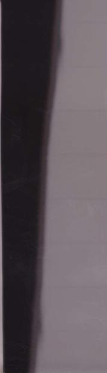
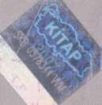

260.
252
1980 yılının Eylül ayında, korktuğum
başımıza geldi, askerler bir darbeyle ülke yönetimine el koydular. Bütün partiler,
odalar, dernekler geçici olarak kapatıldı.
Terör
korkusu
yerini
yeni
korkulara
bırakmıştı.
Tüm
toplumsal
ve
siyasi
yapılanmalar
altüst
olmuştu.
Terörün
odaklarından
biri olarak gösterilen
ve
saygınlığını kaybeden üniversite, işte o günlerde ne yazık ki bence en büyük
darbelerden birini aldı. 12 Eylül anayasasını yapma görevi, üniversiteye değil Milli
Güvenlik Konseyi'nin emirlerine uyan bir grup
öğretim
üyesinin
sorumluluğuna
bırakıldı. Zaten 27 Mayıs darbesi sırasında, 147'ler
olayından
dolayı
üniversitelerde
bozulma başlamış, birçok değerli öğretim
253
üyesinin askere gammazlanarak görevlerinden
atılmasıyla içten içe bir çürüme yaşanmış, kurum saydamlığını kaybetmişti. Şimdi bizi daha da zor günlerin beklediği besbelliydi. Ne yazık ki, üniversite, sivillerin hazırladığı anayasanın bize bol geldiği gerekçesiyle, or-tadan
kaldırılmasına
karşı
koymadı,
koyamadı. Oysa sığ politikalara karşı tavır alıp söz söylemesi gereken en önemli
kurumdur üniversite; aklın, bilimin sözcüsü olmalıdır.
Üniversite,
akıl
ve
bilimle
siyasetçilere
yol
gösteremezse,
yapılan
hatalarda onun da payı olur.*
* Güneş Umuttan Şimdi Doğar, s. 175.
254
Üniversitenin sus pus olduğu, sistemin tek
tip
öğrenci
yetiştirmeye
başladığı
bir
dönemde yaşa maya başladık. Gençlere
sadece bir mesleğin teknik yanlan öğretilmeye başlandı ama çağdaş, düşünen, tartışan,
kendini ifade edebilen, onuruna sahip,
eşitlikçi bir insan olabilmeleri için gereken donanım verilmedi. Bir mesleğin toplumla bağlantıları,
ülke
kalkınmasındaki
ve
uluslararası ölçütlerdeki yeri ihmal edildi.
255
Hayat öyle ya da böyle devam ediyordu, ben
her
zamanki
gibi
işten
başımı
kaldıramıyordum.
Elazığ'daki
Cüzam
Hastanesi'nin iyileştirilmesi gündemdeydi, sık sık Elazığ'a gidiyordum. Dermatoloji Ana Bölüm Başkanı olduktan sonra, Van'da cüzam
taramalannı başlatmıştım. Öğrencili ri mi örgiitlemiş, köy köy geziyor, ülkedeki
cüzzamli sayısını saptamaya, hasta olanlari tedavi etmeye, cüzamlılarla aynı evlerde yaşayanları korumaya çalışıyorduk. İşime
odaklanmadığım, başka seyler düşünmeye
vakit bulduğum zamanlar ise, memleketteki gelişmelere çok canım sıkılıyordu.
256
Bütün bu kargaşanın, koşuşturmanın ve
endişenin arasında, beni mutlu eden ve huzur veren; yeniden mektuplaşmaya başladığım
Ali'nin dosdtlugu oldu
Cevdet'den boşandıktan kısa bir zaman
sonra aramiśti beni, nereden duyduysa
boşandığımı. Hatirimi sormuştu. Telefonu
257
kapatmadan, uzun uzun konusmustuk Sonra bir akşam, hatıralara dalmış düsünürken bir sayfa kâğıt çekmiş, geçmiş günle-
258
rin
nostaljisine
ilişkin
duygularımı
yazmıştım. Yaz dıklarım önce bir sayfa, sonra üç, derken beş, altı, on sayfa olmuştu.
Bir nevi geçmişle hesaplaşmaydı adeta. Bir süre başucumdaki çekmecede durmuştu
mektup. Atmamıştım. Bir gün hastaneye
götiir düm mektubu ve postalanacakların
254
arasına koy dum. Yanıtı hemen geldi.
İnsanların birbirine mek tup yollamayı
unuttuğu bir çağda, ne hoş oluyor du bir dosttan, halini, ahvalini, düşüncelerini anla tan bir mektup almak! Elbette gençliğimizde oldu ğu sıklıkta değil ama yılda birkaç kez yazışıyor,
ar.ı
sıra
da
telefonda
konuşuyorduk.
Bana
gençliğimi,
öğrenciliğimi, baba evimi ve Kandilli'yi hatırlatan kaya gibi sağlam bir dosttu Ali, zaman içinde uzak taki vazgeçilmezim
olacaktı.
255
Bir akşam mutfakta çocukların akşam
yemeğini hazırlarken, radyoda yine marşlar çalıyor, ben de bazılarına ıslıkla eşlik ederek sıkıntımı dağıtmaya ça lışıyordum ki, birden çocukluğumuz boyunca kar deşlerimle bir
ağızdan bağıra çağıra söylediğimi/, vc pek sevdiğimiz Onuncu Yıl Marşı'nı çalmaya
başla dılar: aÇıktık açık alınla on yılda her savastan!"
256
Patatesleri tepsideki etin etrafina dizdim, tepsi yi firına verdim. Ellerimi yıkayıp kuruladım. Mut fağın duvarında asılı Saatli Maarif Takvimi'nden o günün yaprağını
koparmak için uzandım ve tarihi görünce radyodaki şarkıya, "Çıktık'\ "ciktim"a çevirerek, şarkıya yüksek sesle eşlik etmeye başladım.
"Çıktım Açık Alınla Girdiğim Her Savaştan!v
257
Gerçekten, girdiğim her savaştan açık
alınla
çıkmış
mıydım?
Geriye
doğru
düşünmeye başladım!
İki kez vereme yakalanmama rağmen
fakültemi
biti
re
bilmişim.
İhtisasımı
yapmışım. Yürümeyen evliliğimi cesaretle
sona erdirmişim. Zaman içinde çocuklarımı
258
yanıma almışım. Bursumu kazanıp İn-
giltere'ye gitmişim. Bir yılın her saatinden her anından
istifade
etmiş,
öğrendiklerimi
değerlendirmiş, doçent olmuşum! Çapa'da
doçent kadrosuna geçmişim! İkinci yabancı dilimi
mükemmelleştirmek
üzere
dört
aylığına Fransa'ya gittiğimde, dil öğrenmekle kalmamış, Lepra çalışmaları da yapmışım!
Bakırköy Ruh ve Sinir Hastalıkları Hastanesi Cüzam Pavyonları'nda çalışmaya başlamışım.
Bir arkadaşımla Şişli'de ortak muayenehane açmış yü- rütememiş, çocuklarımla birlikte yine Şişli'de bir küçük daireye kiraya
çıkmışım! Taksitle altmış sekiz bin liraya ilk arabamı almış mıyım? Almışım! Aldığım
gece arabayı evimin önünden çalmışlar ama
259
on gün sonra da Dolapdere'de bulmuşlar, ne gam! Çocuklar televizyon seyretmek için
mahalledeki evleri dolaşmasınlar diye Aygaz marka televizyon almışım ama başta Gökşin ve küçük kardeşim Gündüz olmak üzere
herkes bu televizyon aygazla mı çalışıyor diye alay edince, götürüp Profilo markayla
değiştirmişim! Çocukların her hafta bisiklet kiralamalarından bıkıp birer de bisiklet almış
mıyım onlara!
260
Efendim, bu arada bir de ünlü bir
heykeltıraşla evlenmiş, evliliğim ikinci yılını dolduramadan ama dost kalarak, birbirimizin gözünü oymadan boşan mayı da becermişim!
Cüzamla Savaş Derneği'ni kurmuş, cüzam
taramalarını başlatmışım. İngiltere Tropikal Hastalıklar Hastanesi'nde Dr. Jopling'le dört ay çalışmış, gelir gelmez öğrendiklerimi uygu lamaya koyulmuşum. Bu koşuşturma içinde, tezimi yazıp, profesör olmuşum. İstanbul Tıp Fakültesi
Dekanı
Güngör
Ertem'in
öncülüğünde kurulan Lepra Araştırma ve
Uygulama
Merkezi'ne
müdür
olarak
atanmışım. İngiltere dermatologlarının ünlü kulübü
Donvling
Club'm
onur
üyesi
261
seçilmişim. Yetmezmiş gibi, Dermatoloji'nin Anabilim Dalı Başkanlığı'na atanmışım.
Bir de arkadaşım var uzaklarda, beni hep kollayan,
düşünen
ve
asla
gönlünden
çıkartmayan!
262
Yirmi yılda her savaştan açık alınla çıkmış
mıyım?
Şüphesiz evet!
263
Aferin bana!
Hayatım
boyunca,
hiçbir
başarımla
böbürlen- memiştim o ana kadar. Belki de kibir eksikliğini, evimde babaannemden
başlayarak, diğer büyüklerimden ve din
hocamdan aldığım terbiyeye borçluydum. İyi bir Müslüman olmanın en önemli şart
264
larından
birinin
alçak
gönüllü
olmak,
böbürlenmemek olduğu yüreğime kazınmıştı
adeta. Buna rağ men sen tut, bir gün marş
dinlerken, "piktim açık alınla her girdiğim savadan," diye avaz avaz şarkı söyle! Allah'ın gücüne
gitti
işte!
Anabilim
Dalı
Başkanlığı'nda düş kırıklıkları yaşamaya
başladım.
265
Benim, üstlendiğim işleri en iyi şekilde yapabilmek
gibi
bir
takıntım
vardı.
Başkanlığa getirildiğim zaman da, burada neler
yapabilirim
diye
düşünmüştüm.
Bölümde herkes çok yorgundu, herkes fazla mesai yaptığından şikâyetçiydi. Hasta kuyrukları
oluşuyor,
doktorlar
gün
sonunda
hastaların ancak yarısına bakabildiklerini görüyorlardı dehşete. Hakim alamayan hasta bir
gün
sonraya
sarkıyordu,
tipkı
ödenmedikçe büyüyen faizler gibi. Durumu düzeltmek için bir plan yapıp uygulamaya çalıştım. Arkadaşlara, ellerine birer kâğıt almalarını, yaptıkları tüm işleri, saat saat bu kâğıda dökmelerini söyledim. Maksadım,
hastalan randevu ile çağırarak yığılmaya mani
266
olmaktı. Sonra sabah sekizde asistanlar ve hocalarla birlikte bir seminer yaptık. Di- ger görüşleri öğrendim. Bir yol haritası çizip uygulamaya koyduk. Sabahları saat dokuzda polikliniğimi/ açılacak, randevu ile akşama kadar
hasta
bakacaktık.
Öğlen
tatilini
kaldırıyorduk.
Öğlen
saadetinde
herkes
nöbetleşe hasta bakacaktı. Yemeğini yiyen, gelip nöbeti devralacaktı. Böylelikle bir hoca ve
beş
asistan,
günde
yüz
hastaya
bakabilecektik.
267
Kurduğum sistem bir süre yürüdü. Sonra
orta yaşlı ve yaşlı doktorlar şikâyet etmeye başladılar. Rahatlığa, gevşekliğe alışmışlardı.
Disiplinli
çalışmayı
kaldıramıyorlardı.
Hocaların bu davranışları asistanlara da sirayet ediyordu. Arkamdan, terör estiriyor diye söylenenler olmuş. Bunu duyunca
üzüldüm
elbette.
Ben,
Osman
Yemni
Hoca'daıı alıştığım şekilde özveri gerektiren, dinamik bir ça lışma sistemi oluşturmuştum.
Benim bildiğim, alıştığım çalışma temposu ve felsefesi buydu. Hastayı geri göndermemek!
Ama
arkadaşlarım
bu
tempoyu
kaldıramamışlardı. Alıştıkları tarzda anabilim baş kanlığı yapacak başka doktorlar vardı.
Görevi almasını bildiğim gibi, bırakmasını da
268
bilirdim. Onlarla uyumlu bir beraberlik
kuramayınca, başkanlıktan istifa etmeye karar verdim.
Hekimlik
mesleğini
seçen
insanların
özveriden kaçınmaları ne büyük bir yazıktı!
269
Dünyada binlerce meslek ve iş dalı vardı.
Fedakârlık
etmekten
gocunanların,
bu
meslekten
uzak
durmaları
gerektiğini
düşünmüşümdür hep. Çünkü hekimlik, acılara
eğilmektir, acıları dinle mektir, acıları dindirmektir. Sonsuz özveri ister. Lepra Hastanesi'ne başhekim tayin edildiğimde,
Bakanlık bana ancak tek bir ay için ödeme yapa
bilmişti.
Sonra,
bu
paranın
verilemeyeceği anlaşıl dı ve ödeme kesildi.
Ne başhekimliğimden ne de diğer ek
görevlerimden bir kuruş para almadım. Para alamıyorum diye görevden çekileydim, kim bilir kaç hasta bakımsız, sahipsiz kalırdı. Bir heki min en büyük ödülünün manevi getiriler
olduğu na inanırım. Para kazanmak, zengin
270
olmak iste inek çok güzel bir duygu ama bunu isteyenler, ti- ı aret yapmalı.
Bir başka büyük yazık da zamanı ve emeği
doğ- ııı değerlendirerek kullanamamaktı.
Oysa zaman ve emek doğru kullanılabilse, ne
çok iş yapılabilirdi!
271
Kliniğimizde, histopatolojiyi kurmuştuk
mesela! Dünyanın pek çok yerinde yapıldığı gibi, kendi biyopsilerimizi kendimiz yapıyor, bünyemizde değerlendiriyorduk. Ama olmadı,
arkadaşlar
bu
işleri
tekrar
patalojiye
döndürdüler, laboratuvarimız kapatıldi Oysa orası düzeyli bir araştırma kaynağı olabilirdi.
Ayrıca, bir de Cinsel İlişkiyle Bulaşan Hastalıkla
ı
Merkezi
kurmuştuk.
Bu
merkezimizde mikrobiyoloğumuz ve kadın
doğumcumuz vardı. Her öğle saatinde,
hastaların telefonla başvurularını alıyor, hastaları bilgilendiriyor, gerekirse muayeneye çağı- ııyorduk. Diğer bölümler, bu projemize hiç sıcak bakmadılar. Bir üroloji hocasının, telefonla cinsel ledavi olur muymuş diye
272
bizimle
dalga
geçmesini
dünmüş
gibi
hatırlarım. Oysa biz derdini yüz yüze
anlatmaya çekinen, utangaç hastaları bu
sistemle,
muayeneye
yönlendiriyorduk.
Telefonla muayene olmayacağını biz de
biliyorduk
elbette!
Dünyada
bu
iş
yaygınlaşırken, bizdeki olumsuz tutumlardan dol-layı önce telefon nöbetlerimiz kalktı, sonra hizmet eski canlılığını kaybetti ve yitti gitti!
273
Allahtan bu arada hayatıma sevinç katan başka olaylar oluyordu. Çınar, tıbbiyeyi bitirmiş,
mecburi
hizmetini
yapmaya
hazırlanıyordu. Ben yine oğ lum için
kimseden
torpil
isteyemedim.
Kurada
Hakkari'yi
çekti,
mecburi
hizmetini
Uludere'dc yaptı Çınar. Bir anne olarak, üzüldüğümü, telaş landığımı itiraf etmeliyim.
Ama Doktor Türkan Saylan olarak, çok
sevinmiştim. Çünkü benimle ay nı branşı seçen oğlum, benim tecrübelerime erken yaşta sahip olacaktı. Cüzamı yöresinde görecek, memleketini, en kötü şartlannı, yaşayarak tanıya çaktı. Onun orada, o şartlarda
geçireceği bir yılın deneyimini, ona on yıl boyunca hiç durmadan an latsam, tüm
274
ayrıntılarıyla aktaramazdım. Çınar mecburi hizmeti sırasında, bitlendi, pirelendi, yok luğun, yoksulluğun ve cehaletin ne olduğunu öğ rendi. Döndüğünde bambaşka bir Çınar'dı.
Sonra Çınar, evlenerek Almanya'ya yerleşti.
Biz Çağla yan'la baş başa kaldık ve birlikte yaşamaya
devanı
ettik.
Bu
yüzden
Çağlayan'la pek çok anlatmaya değer komik anım vardır benim.
275
Bir keresinde, Muğla'ya bir seminere davet
edil
miştim. Çağlayan'ın tatiline denk
gelmişti. Semi nere giderken onu da yanıma aldım ama bir taraf tan da düşünüyordum, çocuğun saçları nerdeysc omuzlarına değecek
kadar uzun, kılık kıyafeti ise, tam bir hippi.
Genellikle bir yere konuşma yapma ya
gittiğim zaman, gittiğim yerin resmi erkanıyla bir araya geliyorum. Kaymakamlar, valiler, Çağla yan'ı bu haliyle nasıl kabul edecekler?
Ama yapacak bir şey yoktu, çocuğa gel
demişim bir kere. Kalktık gittik. Tam da korktuğum gibi, Vali bizi makamına davet etmez mi! Orada bir terslik olmadı. Fakat sonra bizi arabalarla Fethiye'ye götürdüler gezmeye. Vali de yanımızda olduğu için, Fethiye'deki resmi heyet, bizi karşılamaya gelmiş. Arabalardan indik, Çağlayan en sona kalmış. Alayiş sevmediği için biraz beklemiş
olmalı arabada. Biz korumaların arasında yürümeye başladık. O da bize yetişmek için peşimizden koşmuş. Birden arkamızda bir va-veyla koptu. Çağlayan, "Bırakın beni yahu!"
diye bağırıyor. Bir de ne göreyim, benim saçlı sakallı oğlumu korumalar terörist diye
yakalamış, hırpalıyorlar. Uzun saçları hayatı boyunca sorun çıkartmıştı oğluma.
276
AĞLASAM SESİMİ
DUYAR MISINIZ?
Gelenin gidenin çok olduğu bereketli bir gündü,
bugün.
Öğleden
sonra,
Çağdaş
Yaşam'dan, kırsal alan burslarının başındaki Sema gelmiş, bana son durumlar hakkında bilgi
261
aktarıyordu, Zeynep elinde tepsiyle kapıda gözüktü.
"Yine mi yemek geldi? İstemiyorum,"
dedim.
262
"Ama bu yemeği kim yedirecek biliyor musunuz?" dedi Zeynep.
"Gökşin mi geldi yine?"
263
"Bu sefer ben geldim!" diyerek içeri Ayşe Yüksel girdi. Kızım benim! Ece'yi kucağına almış, okşuyor, kedi, kimi seveceğini bilir, gurlaması
sokanın
nerdeyse
başından
duyulacak.
264
"Bu kedi seni çok seviyor Ayşe, benim için özel olduğunu anladı herhalde," dedim, "hani gidiyordun sen?"
"Ben de sizi çok seviyorum," dedi Ayşe, kediyi
bırakıp
tepsiyi
aldı
Zeynep'den,
dizlerimin dibine oturdu.
265
"Bana yemek verme. Aç değilim."
"Olmaz Hocam. Yarın erkenden dönüyorum
ben. Siz de kemoya gideceksiniz. Birkaç gün hiç yemek yiyemezsiniz artık. Ne olur benim gözümü
arkada
bıraktırmayın,
içiverin
çorbanızı."
266
Yemek
vakti
değil
ama
doktorların
talimatıyla bana az ve sık veriyorlar gıdamı.
Tepsiyi dizlerime koydu Ayşe, Sema'yı öptü, karşıma geçip oturdu. Van'a dönüyor yine. 100.
Yıl Üniversitesi Tıp Fakültesi, Halk Sağlığı Anabilim Dalı Başkanı oldu. İftihar ediyorum kızımla ama çok da göreceğim geliyor.
267
"Özleyeceğim seni," dedim.
"Ben de sizi özleyeceğim, canım benim,"
dedi Ayşe.
268
"Büyük aşk!" dedi Sema.
"Hem de nasıl! Ben Hoca'ya nasıl ve ne zaman vuruldum, biliyor musun sen?"
269
"Tahmin ediyorum. Seni onun servisine verdi ler Lepra Hastanesi'nde..."
Sema'nın lafını kesti Ayşe, "Bilemedin!"
270
"Anlat o zaman," dedi Sema.
"Taa 1977-78'e gider, Türkan Hoca'yla tanışmam.
Ben,
Florence
Nightingale
Hemşirelik Yük sek Okulu'nu yeni bitirmişim.
Halk Sağlığı Anabilim Dalı'nda yüksek lisans programına hazırlanı yordum, bizim orada lepra konusunda bir panel yaptılardı. Türkan Hoca'yı
271
da konuşmacı olarak d.ıvet etmişler. Adını ve namını duymuştum ama ilk kez orada gördüm,
yanında tedavi olmuş iki Icpralı hastayla geldi.
Kırmızı üzerine siyah puanti- ycli bir döpiyes giymiş, saçları da alev gibi kırmızı, kısacık.
Nasıl güzel, nasıl hoş bir kadın, kimsenin aklına gelmez lepra gibi bir hastalıkla uğraşacağı. (,ok etkileyici bir konuşma yaptı. Panelin sonunda ise yanında getirdiği lepralılar bağlama çaldılar, türkü söylediler."
272
"Hemen yanına gidip kendini mi tanıştırdın?"
"Hayır, o gün tanışmadık. Aradan epey bir zaman geçti. Halk Sağlığı'nda öğretim üyeliği yapan Müeyyed Hanım'la, Türkan Hoca,
Cüzamla
Savaş
Derneginde
de
birlikte
çalışmışlar. Hoca bir gün telefon etmiş
Müeyyed Hanım'a, Lepra Hastanesi için bir hemşire arıyorum, demiş. Müeyyed Hanım
bana, 'Türkan Hoca, aynen seni tarif etti. Ona adını verdim, lütfen git konuş,' dedi. Ben,
'Kusura
bakmayın
efendim,
kabul
edemeyeceğim,' dedim. Aklımda başka projeler
273
vardı. Bir süre sonra Müeyyed Hanım yine çağırdı beni, niye işe başlamadığımı soruyor.
'Efendim, ben anladım, siz kabul etmediğimi söyleyemiyorsunuz, müsaade edin Hoca'ya ben kendim gidip, hayır, diyeyim, siz de arada kalmayın, bitsin bu iş,' dedim. Telefon ettim, iandevu alıp gittim. Girdiğim oda, Hoca'nın Çapa'daki
meşhur
odası.
Pencerelerde
yazmalar, duvarda heybeler asılı. Saksılarda sardunyalar, vazoda karanfiller. Odasında Sultan adında bir hemşire ile Adil adında bir hademe vardı. Beni onlara tanıttı, onlar çıkınca, konuşmaya başladık. Ben derdimi anlatırken, Sultan Hemşire'yle Adil, çeşitli neden lerle girip çıkıyorlardı odasına, soru soruyorlar, bir şeyler söylüyorlardı. Onlarla olan iletişimine şaşırıp kaldım. Sanki o kişiler hemşire ve hademe değiller de onun arkadaşlarıydı,
öylesine sıcak ve eşit bir ile tişim içindeydiler.
Sultan Hemşire'nin arkasından, 'Sultan benim sadece hemşirem değil, aynı zaman da kızımdır, çok değerlidir benim için,' dedi, 'on suz bu servis, böyle örnek bir servis olamazdı.'
274
Bir şeye daha dikkat ettim, telefon çalıyor sık sık, telefonu koskoca profesör, 'Ben Doktor Tür kan,' diye açıyor. Çok etkilendim.
'Efendim, size hayır demeye gelmiştim ama vazgeçtim. İşi kabul ediyorum,' deyiverdim.
275
'Hemen evet deme,' dedi, 'ben birazdan
Lepra Hastanesi'ne gideceğim, sen de benimle gel, ora daki vaziyeti gör. Hoşuna giderse kalırsın.'
Birlikte çıktık, bej rengi bir Murat'a bindik.
Ben yanına oturdum. Adil bir sürü kutu, sargı bezi, alet edevat yükledi arabaya, arka koltuklar
276
da tepeleme doldu, bagaj da. Bakırköy'e, hastaneye geldik. Ge tirdiğimiz eşyalann bir kısmını kendi yüklendi, ba zılarını bana verdi.
Tabii geldiler yardıma ama o da taşıyor, hademe gibi. Hastanedeki odasına girdik.
Gömleğini giydi, 'Şimdi hastalan dolaşacağım, sen de gel ki, yapacağın işe dair bir fikrin olsun,' dedi. peşine takıldım, koğuşa gittik.
Yataklar dolu. Has- taların her biriyle el sıkışıyor, hatırlarını soruyor, kimine sarilıyor, kimini öpüyor. Ben hayreder içindi bu
manzarayı seyrediyorum. Derken beni çok •
ikileyen bir şey oldu, Hoca, elleri pençeleşmiş, yüzünün şekli deforme olmuş, kör bir kadının yangının kenarına oturdu, elleriyle yüzünü, kollarını okşadı, 'Senin bu ipek gibi tenine
277
bayılıyorum, biliyor musun?' dedi. Hastanın yüzü aydınlandı. Ben dehşetle hastaya baktım ve gördüm ki, o çirkin kadının cildi nasıl olmuşsa, gerçekten pınl pırıl. Türkan Hoca'yı seyrettikçe anladım ki bir sihirli formülü var, kiminle olursa olsun, önce o kişinin en iyi tarafinı görüyor ve o iyi şeye vurgu yapıyor. < Masına dönmemizi hiç beklemeden, 'Hocam,'
dedim, 'işi gördüm, anladım, kabul ediyorum.
Çok isliyorum yanınızda çalışmak!' İşte Sema, ben o gün vuruldum Hoca'ya."
278
"Abartma Ayşe," dedim.
"Hiç abartmıyorum. Sonrası zaten malum, sizin sayenizdedir mesleğimde buralara kadar yükselmem,
profesör
olmam.
Siz
yüreklendirmeseydiniz, yaptıklarımın hiçbirine cesaret edemezdim. Af- ııka'ya da sizin
279
sayenizde gidip ayakkabı üretmeyi ögrendim, onca tecrübe edindim. Az şey mi bunlar?"
Sema da geri durmuyor, beni övücü bir
şeyler bulup söylüyordu.
280
"Siz buraya şakşakçılığa mı geldiniz kızlar?
Bini övmeyi bırakın da eğlenceli bir şeyler anlatın, içim açılsın, haydi!"
"Benim aklıma ne geldi biliyor musunuz Hocam," dedi Ayşe, "hani yıllar evvel, sizin arabayl.ı Bakırköy'den evlerimize dönüyorduk ikimiz, bizi bir araba izlemeye başlamıştı.
281
Korna çalıyordu siı rekli. Siz yavaşladınız, onlar da yavaşladı, baktık bıı araba dolusu genç, elleriyle kollarıyla işaretler yapı yorlar.
Biz lastik patladı zannettik ama baktık lastiklerde bir kötülük yok, ışıkları, sinyali kontrol ettiniz, hiçbir sorun yok! Hızlandık, yine peşimizde ler, korna çalarak. Hasta mı var arabada diye telaşlandınız. Kenara çekip durmuştunuz. Onlar da ya nımıza çektiler arabayı, yavaşladılar, pencereyi indi rip, 'Ne var çocuklar?' diye sormuştunuz, hatırladı nız mı?"
282
Hatırlamaz
olur
muyum?
Ne
kadar
gülmüştük sonradan! Diğer arabada, benim tarafimdaki ço cuk, camını indirip, "Kızlar, hep birlikte bir şeyler içelim, diyecektik," demez mi!
"Oğlum, benim senin yaşında oğullarım var," demiştim."
283
"On yaşında mı evlendiniz?" diye sormuştu.
"Hatırladım Ayşe," dedim, "gençtim o zaman Baksana şimdi ne hale geldim!"
284
"Siz hep güzelsiniz," dedi Ayşe, "Sizin içiniz güzel. Biliyor musun Sema, çok da marifetlidir ha! Biz yıllar önce doğuya gitmiştik, Van'ın köylerine,
Bahçesaray filan oralara. Oralarda hiçbir şey bulunmaz.
Hoca,
biz
gençler
taramaya
çıktığımızda, bazen Sağlık Ocağı'nda kalırdı,
285
döndüğümüzde bize mutlaka bir yemek
pişirmiş olurdu oranın kısıdı imkânlarıyla.
Kısır, menemen, ne bulduysa artık, su ile kek bile yapmıştı, bir keresinde."
"Kocalarım
adımı
'kötü
ev
kadını'na
çıkarınca, gayrete gelip öğrendim," diye güldüm.
286
"Nankörler!" dedi Sema.
"Kıymetini bilen de var," dedi Ayşe. Ali'yi kastediyordu. Benim çok yakınım olduğu için, bir tek o biliyor taa lise yıllarından beri süregelen 'yazılı' ilişkimi. Önceleri her doğum günümde isimsiz gelen beyaz gülleri merak etmiş, sormuştu. Bir arkadaşımdan, demiştim.
287
"Bir hayranınız yani?" demişti.
"Kim bilir?"
288
"Yok! Bir hayrandan öte biri olmalı."
"Neden?"
289
"Bin tane hayranınız var Hocam sizin. Ama hiçbiri cesaret edip böyle her yıl çiçek yollamıyor."
"Paralarına kıyamıyorlardır," diye şakaya vurup geçiştirmiştim.
290
Yıllar geçti, Ayşe'yle iyice yakınlaştıktan sonra, bir öğleden sonra, hastaneye biraz gecikerek döndüğümde, onu telaş içinde beni beklerken buldum.
"Nerelerdeydiniz Hocam?" diye nerdeyse üzerime atıldı, "Telefonunuz kapalıydı. Oysa biliyorum hic kapatmazsınız cebinizi. Evinizi
291
aradım yoksunuz! Çapa'yı aradım yoksunuz!
Ne yapacağımı bilemedim, çok merak ettim çok!"
îşte o zaman ona, "Ayşe," demiştim, "sana bir sırımı vereceğim. Hani o her yıl bana doğum günümde çiçek gönderen arkadaşım var
292
ya, İstanbul'a bir iş için gelmiş, onunla yemek yedik."
Başka bir şey söylememiştim ama Ayşe, bu
kişinin benim için özel biri olduğunu anlamıştı.
293
"Bunları anlatacağına, beni sevindirecek bir şeyler anlatsana," dedim.
"Biliyorum ne duymak istediğinizi," dedi Ayşe, Sema'ya döndü, "ben 15 Ocak'ta Cenevre'ye gitmiştim, Hoca'yı temsilen. Onu anlatayım istiyor."
294
"Anlat o zaman," dedi Sema.
"Şimdi bizim Hoca, lepralıların toplumdan dışlanmamaları için, çalışmalar başlatmıştı ya, Sosyal Hizmetler adı altında. Sorardı mesela Ahmet Efendi'ye, iyileşip hastaneden çıktıktan sonra nasıl geçi neceksin, diye. Ahmet Efendi der ki, benim beş ko yunum olsa, çocuklarımla
295
güderdim koyunları, sütünü, kırpıklarını satar, geçinirdim. Hemen Ahmet Efendi'ye beş koyun
alabilmek için, imkân yaratir. Ahmet Efendi'nin böylece, hayatı kurtulur, köyüne döndüğünde bir işi olur, yılların içinde borcunu da azar azar öderdi geriye. Kimseyi ayırmadan, herkese göre bir iş bulduydu. İşte İstanbul'da başlattığı bu
projeyi,
uluslararası
bir
projeye
dönüştürmek is tedi. Geçen yıl, ekim ayında, Teknik Üniversite'de bir çalıştay yapmıştık, Hoca bildirgemizi, Birleşmiş
296
Milletler
Genel
Sekreteri
B.
Moon'a
göndermiş. O da dosyayı, Cenevre'deki İnsan Hakları Yüksek Ko- misyonu'na vermiş.
Komisyon, Hoca'yı çağırınca, hasta olduğu için gidemedi, beni yolladı. Ay Sema, ne sükse yaptı bizim proje, bilemezsin! Biz bu ça-lışmalara otuz yıl önce başlamışız, diğer ülkeler daha
yeni öğreniyor. Benimle tanışmak
isteyenler, önümde kuyruk oldular. Hepsi özellikle
çocuklara
burs
projesini
nasıl
başardığımızı öğrenmek istiyorlardı. Hoca'nın anlat anlat dediği, bu işte!"
297
"Onlara ÇYDD'den de söz etseydin."
"Ettim. Ama onlann başında bir Türkan Hoca
olmadığı
için,
aynı
başanyı
yakalayabilirler mi, bilemem."
298
"Saçmalama Ayşe," dedim, "önemli olan kişiler değil, projeler ve sistemlerdir. İyi bir projeyi, sağlam bir sisteme oturtursan, başarılı olur, benimle ne alakası var?"
"Hiç de değil. Bu işler özveri de ister.
Sema'cı- gım, bu Türkan Hoca var ya, Lepra'nın başındayken, tek bir kurban bayramı bilmem ki,
299
gezmek için bir yerlere gitsin. Gitmez. Neden, çünkü her bay- tam hastanede kurbanlar kesilir.
Kimsenin hakkı kimseye geçmesin diye Hoca başında durur, derisini, etini, kavurmalığını ayırtır. Yoksula gidecek kısmı eliyle hazırlar.
Bir keresinde, hastanın birinin canı işkembe çorbası çekmiş. Bizim Fatma Hanım vardı, o sırada yemeklerimizi yapan. Hoca dedi ki, 'Ha-zır koyunu kestik, hastamızın gönlü olsun, bir işkembe çorbası yapıver, Fatma.' Fatma, 'Ben dünyada elimi süremem işkembeye,' demez mi!
Tiksinir- miş. Hoca giymişti eline eldivenleri, kendi temizlemişti, hiç unutmam. O hastaya, işkembe çorbasını içirmişti, o bayram. Kimde var böyle bir Hoca?"
300
"Bende de ne hikâyeler var, ona dair ama kaçmam lazım," dedi Sema, "bir gün buluşur, konuşuruz, olur mu?"
"Ben de çıkıyordum zaten. Yolcu yolunda gerek. Çağlayan evde mi?" diye sordu Ayşe,
"Evdey se ona da bir Allahaısmarladık diyeyim."
301
"Seslen yukarı," dedim. Ayşe hole çıktı, seslendi. Çağlayan Ayşe'yi duyunca, paldır küldür indi merdivenlerden. Sema ayaklanmış, duvardaki
aile
resimlerini
inceliyordu.
Annemin,
babamla
evlen
diği
yıllarda
çektirdiği o güzelim gençlik resmine uzun uzun baktı, "Hocam, ne kadar güzelmiş an neniz,"
dedi, "güzelliğinizi ondan almışsınız."
302
"Asıl teyzem benzerdi anneanneme," dedi, içe ri giren Çağlayan, "san uzun saçları vardı, incecik ti. Bir gün teyzemle durakta otobüs bekliyorduk, tesadüfen Güzel Sanadar'dan bir arkadaşım da dıı rakta o sırada. Bana kaş göz işareti yapıp duruyor, yanına gittim, 'Nerden buldun bu leylek bacaklı fıstığı?' diye sordu. 'O, benim
teyzem,'
demiştim
ama
inandıramamıştım."
303
Ayşe ellerimi tuttu, "Kendinize iyi bakın Ho cam. Yaz için döndüğümde, ben de sizi fıstık gibi görmek istiyorum," dedi.
"Sen de kendine iyi bak, canım kızım,"
dedim, "Van'dakilere benden selam söyle!"
Çıktılar. Çağlayan onlan geçirmek için aşağı indi. Karşı duvarda asılı annemin resmine baktım,
"Çok
güzeldin
anne,
çok
da
marifedliydin," dedim içimde bir sızıyla, "ama
304
çok şanslı değildin. Sana neler çektirdik ve duygularını anlamaya hiç yeltenmedik.
Gençliğinde
Atatürk'ün
bir
Limoge
vazosuna benzettiği anneciğimi, 1986 yılında kaybettim.
•
icimde, keşkelerle, hayıflanmalarla ve
özlemle dolu, derin bir kuyu açılmış gibi oldu.
Ben evimden yirmi iki yaşında ayrılmıştım.
Ayrıldığım günden
305
• ibaren
de
nefes
nefese
bir
maratona
başlamıştım.
Annem,
kendi
evinde
kız
kardeşim Turhan'la birlikte oturuyordu. Vakit buldukça onları ziyarete gidiyordum ama bazen de birkaç hafta yüz yüze göremediğimiz
oluyordu.
Bana
evlenene
kadar
yaptığı
baskılardan illallah dediğim, eleştirilerinden goc unduğum ve diğer kardeşlerime benden daha lfazla düşkün olduğunu düşündüğüm
anneme pek yakın sayılmazdım ama ölümünün
beni böylesine sarsacağım da hiç tahmin etmemişim. Onun gidiciyle, birden kendimi yaşlanmış ve yapayalnız hissettim. İnsanlar galiba anne ve babalarının ikisini birden kaybettiklerinde,
yaşlandıklarını
anlıyorlar.
Hem de birdenbire!
306
Duvardaki resimde, annemin ince ve
muntazam
hatlanna
bakarken,
çocukken
annemin davranışla nndan nasıl yaralandığımı hatırladım, içim sızladı. Belki de en büyük ben olduğum için, hep beni haksız bulur, beni azarlardı annem. Çok acı çeker, isyan
duygularıyla dolardım. Ondan dolayı her tür lü haksızlığa bu kadar tahammülsüz olduğumu dii şünürüm. On iki yaşlarındaydım galiba, üvey çocuk
olduğumu
zannettiğimde.
Annem
üzülmüştü, se nin iyiliğin için, daha başarılı, daha parlak olman için böyle davranıyorum, demişti. Kim bilir belki de hakkı vardı çünkü toz kondurmadığı ve çok şı marttığı küçük kızı, onun
kanatlannın
altından
çıkıp
hayata
uçamadı. Evlenmedi, liseyi bitirdikten sonra bir
307
ara öğretmenlik, kısa bir süre de sekreter lik yaptı ama sürekli bir işe girip çalışmadı, sık sık bunalımlar geçirdi, hep annemle birlikte yaşadı ve onun ölümüyle yapayalnız kaldı. Oysa ne kadaı duygulu ve ne kadar güzel bir kızdı.
Ben ancak çalışmayı, koşturmayı bırakıp
mec buren yatağa bağlandığım ve geçmişi fazla
308
düşün düğüm şu son günlerde fark ettim annemin bana olan sert tutumunun çok yararını gördüğümü. Ve yine giderayak anladım ki ben ailede en çok anneme benziyorum. Evimizin en tutucu, en sağcı, ay nca orucunu hiç
kaçırmayan en dindar kişisi, an nemdi.
Babaannem de dindardı ama onunki, hura
felerin yarattığı, korkunun da etkilediği, bilinçsiz bir dindarlıktı. Benim muhafazakâr görüşlere, du ruşlara uzaklığım annemin
tutuculuğuna
tepkiden
olabilir
ama
yardımseverliğimi ve kafama koyduğumu illa yapmak istememi, annemden aldığım genlere borçluyum.
Annem
mahalledeki
herkese,
maddi manevi yardım ederdi. Oysa babamla evlendikten sonra hayatının büyük bölümünü
309
ciddi maddi sıkıntılar içinde geçirmişti. Eve gelen yardımcı kızlara da, dikiş olsun, yemek olsun mutlaka bir şeyler öğretmek isterdi.
Güleceksiniz ama bir de İngilizce! Bir
keresinde
Türkçeyi
bile
doğru
dürüst
konuşamayan bir kızcağız gelmişti doğuda bir yerden. Birkaç ay sonra ne göreyim, annemi ziyarete gelmiş bir İngiliz hanıma, "How would you lıke your tea?"12 diye soruyor.
12 Çayınızı nasıl alırsınız?
310
Annemin
bir de
mucitliği
vardı ki,
tutturabiley- di, satmak zorunda kaldığımız bütün arsalanmızı ve evimizi geri alabilecektik!
Ben egzamaya karşı bir ilaç geliştirdiğini, bu ilacı
küçük
şişelerde
bazı
eczanelere
pazarlamaya
götürdüğünü
hatırlıyo-
rum.
Aynca soba borulanyla, evin bütün odalarını ve sıcak suyunu ısıtacak bir sistem bulup, babama patentini alması için ısrar ettiğini de. Fakat şu pro- jesi bence en takdire değer olanı: Artık nasıl ola-caksa Baltalimanı ile Kâğıthane arasındaki dere ıslah edilip oraya bir yat limanı yapılacak; böylece İstanbul'un başındaki en büyük sorunlardan biri olan Haliç, tertemiz bir hale gelecek! Bir taşla kim- bilir kaç kuş? Tabii bu projeyi Çağlayan'a çizdirtip, zamanın
311
Belediye Başkanı Bedrettin Dalan'a gön-
derdiğini ve elbette Çağlayan'ın kapıdan kovulduğunu ölümünden sonra öğrenmiştim!
Evet, annem baş koyduğu işi tamamına
erdirmeye çalışan biriydi, tıpkı benim gibi.
Annemin ölümü o kadar kendine yakışır bir
şekilde tecelli etti ki, arkasından Allah'ın
312
sevgili ku- luymuş, diye düşünmüştüm. Annem
çok güzeldi, her zaman bakımlıydı, kimsenin karşısına
rujunu
sürmeden
çıkmazdı,
çocuklarının bile. Kendine de iyi bakardı, sağlıklıydı bu yüzden. Uzun ömrünün sonunda, bir gün aynanın karşısında, makyajını yaparken, hiç acı çekmeden kalbi duruvermiş.
Evdeki yardımcı kız haber verdi, gittim, onu rujunu sürmüş, sevdiği mor sabahlığını giymiş, yerde yatarken buldum. Sarıldım anneme.
Sımsıkı sarıldım. Bana yapmış olduğunu
düşündüğüm haksızlıklar o anda kalbimden silinip gitti. O benim canım, tom bul, cefakâr annemdi. Annesizliğin ne demek oldu ğunu işte o an, keskin bir bıçak yarası gibi hisset tim, yüreğimde. Tuhaf bir şekilde yalnız kaldım.
313
Annemi kaybettiğim yıl benim sağlığım da bo zuldu. Hamileliklerim sırasında geçirdiğim verem lerden sonra, artık hastalık sıramı savdığımı düşü nüyordum. Oysa daha verilecek diyetim varmış! Bir gün banyoda, aynanın karşısına geçmiş, erken teşhis için hastalanma göstermek üzere, meme kontrolünün provasını yaparken, elime sağ göğ- sümde sert bir nodül geldi. İçime doğmuş gibi, hastalara meme kontrolü yapmaya karar vermem, ne tuhaf bir tesadüftü! Kimseye hiçbir şey söyleme- den, ertesi gün meme uzmanı bir arkadaşıma gittim. Hemen bir mamografi istedi. Mamografide büyükce bir kitle bulundu. Biyopsi de iyi çıkmayın- ca ameliyat şart oldu. Doktorlar sadece kitleyi yada tüm memeyi almak üzere
314
cizgiliforum
fikrimi sordular. Bu dertten bir vuruşta kurtulmak için, mememin bütünüyle alınmasını istedim.
Hastalık teşhis edildiğinde, moralimi fazla boz- maınıştım ama işlerimi aksatacağım diye çok üzülmüştüm. 1986 yılı, Gandhi Ödülü' nü
aldığım, yorun lepra çalışmaları yaptığım, çok
315
hareketli bir yıldı Bilimsel toplantılarım, derslerim, lepra taramalının vardı. Cüzamla Savaş Vakfı'nı kurmak üzeydik. Hasta olmanın hiç de sırası değildi ama Tanri beni nedense hep dar zamanlarımda yakalıyordu, hastalıklarla sınamak için.
316
Ameliyatımın öncesinde, artık Almanya'da
çalı smakta olan Çınar, bana destek vermek üzere, istanbul'a geldi. Ameliyata gireceğim günden bir gece once, evimizde iki oğlumla baş başa oturuyordum. Ben kasvetli havayı dağıtmak için ha bire bir seyler anlatıyordum ama onlar suskundular. Odalalarimiza dağılmak üzereydik ki, Çınar, "Anne," dedi, "sana bir şey söylemek istiyorum."
317
"Söyle oğlum," dedim, merak içinde.
"İlkokuldayken, sınıfıma puf börekleri kızarttı ğın günü hatırlıyor musun?"
318
Güldüm. Nasıl unutabilirdim o günü. Akşa müstü geç bir saatte yorgun argın eve
geldiğimde Çınar'ı kapıda beni beklerken bulmuştum.
"Sıra bana geldi, anne!" demişti.
319
"Ne sırası oğlum?"
"Okula beslenme götürme sırası."
320
O yıllarda benim oğlanların gittiği okulda, ço cuklann anneleri okula sırayla beslenme yollarlardı Sınıf öğretmenleri, benim evimin dışındaki ağır programımı bildiklerinden, Çınar'dan
ve
Çağla
yan'dan
beslenme
istemezlerdi.
321
Çınar, duraladığımı görünce, "Bu işten kurtıı luşun yok! Yarin beslenme götüreceğime söz veı dim. Elim boş gidemem, anne!" demişti.
Sokağa çıkıp alışveriş etmek için çok geç olmuş tu. Ellerimi yıkayıp mutfağa girmiştim.
Mutfakta, her evde bulunan un, yağ, peynir gibi malzemeler
vardı.
Çaresiz
onlari
322
kullanacaktım. Hamur açmis sınıftaki her çocuğa üçer börek hesabıyla, bir suni börek hazırlamış, onları sabahın ikisine kadar, teker teker kızartmıştım.
"Evet Çınar, hatırlıyorum" dedim.
323
"İşte o gün için özür diliyorum, anneciğim/'
"Neden özür diliyorsun ki?"
324
"O gün beslenmeyi sana yaptırtmak, öğretim nin değil, benim fikrimdi. Ben beslenme sırasını zorla almıştım öğretmenden. Senin, hepimiz yatuktan sonra kan ter içinde börek kızartman ve ertesi sabah erkenden kalkıp hastaneye koşman, o gün bugündür içimde ukde kaldı. İnsan çocukken ne kadar hain olabiliyor! Lütfen beni affet."
325
"İlahi Çınar," dedim, "ben de o börekleri ha-zırlarken ne düşünmüştüm, biliyor musun?"
"Ne düşünmüştün?"
326
"Ne kadar kötü bir anne olduğumu! Anneanneniz, hayatı boyunca dayılarına, teyzene ve bana börekler, kekler, pandispanyalar pişirdi, mutfaktan
yıkamadı.
Hırkalarımızı,
kazaklanmızı elleriyle ördü. Teyzenle benim giysilerimi, kendi biçer, Singer makinesinde tıkır tıkır kendi dikerdi. Ben o gece börekleri yaparken, anneme kıyasla hiç de iyi bir anne olmadığımı düşünüyordum. Kırk yılın birinde bana bir şey yapma fırsatı verdiğin için, ne kadar memnun olmuştum, bilemezsin."
327
"Madem günah çıkarma seanslan başladı, benim de diyeceklerim var anne," dedi Çağlayan.
"Sana
beslenme
hazırladığımı
hiç
hatırlamıyo- ııım ama!"
328
"Ben senden, babama gitmemek için sana ettigim eziyetler yüzünden özür dilemek
istiyorum."
"Eziyet mi ederdin bana?"
329
"Hem de her hafta sonu! Hatırlamıyor musun anne hafta sonlan onu ziyarete gitmem için ne diller döker, bazen bana para bile teklif ederdin? Bir keresinde elli lira koparmıştım senden."
"Hiç hatırlamıyorum."
330
"Anne, niye o kadar korkardın babamdan?"
"Bak, niye korktuğumu söyleyeyim sana,"
dedim, "boşanırken
velayetinizi
babanıza
bırakmış tüm. Israrla istemişti. Vermeyecek olursam, boşana mayacağımı biliyordum.
Aynca, ilk fırsatta sizleri geri alacağını da biliyordum. Nitekim tam da dü şündüğüm gibi
331
oldu, ikiniz de bir müddet sonra ya nıma geldiniz ama ben babanızdan ne bir kuruş pa ra, ne de velayetinizi istedim. O para vermekte ısrar etti başka! Ama velayetin onda kalması, Demok les'in kılıcı gibi sallanıp durdu başımın üzerinde. Ya kızar da sizi geri alırsa, ya sizi bana göstermezse! Hep bu korkuyla yaşadım, boşanırken velayeti al madığıma hep çok pişman oldum. Bu yüzden yal vanr yakanrdım sana, babanı kızdırmayalım diye."
332
Çağlayan'la Çınar uzanip ellerimi sımsıkı tuttu lar. Onlann sağlıklı genç bedenlerinden, ellerime geçen yaşama sevincinin ve sevginin damarlarımda dolaştığını, yüreğimi ısıttığını hissettim. Ben o deneyimsiz yaşlarımda,
nereden bilebilirdim anneler le evladarının arasına, değil velayet hakkının, hiç kimsenin ve hiçbir şeyin giremeyeceğini! Boşuna telaş edip üzülmüşüm! İşte şimdi de her zaman ol duğu gibi yine yanımdaydı çocuklanm. Bana sevgi, cesaret ve güç veriyorlardı. Kanseri yenmem için çok nedenim vardı, çok! Göz kırptım çocuklarima, "Bu maçı ben kazanacağım, çocuklar," dedim.
333
"Kazandın bile, anne!" dedi Çağlayan.
Ameliyat esnasında, memeyi alırlarken sağ
kolin kaltı lenflerini de aldılar, çünkü orada da başlangıç halinde birkaç beze bulunmuştu.
Sonradan, k eşke öteki mememi de aldırsaydım diye düşündü- güm anlar çok oldu, çünkü tek memeyle Amazon gibi yaşamak hiç kolay
değildi.
334
Ameliyattan
sonra
Çınar,
pataloglan,
cerrahlan, onkologlan bir araya getirdi ve bir konsültasyon isledi. Doktorlar beş seans kemoterapi görmeme karar verdiler. Kemo
seanslan üç saat kadar sürüyor ve beni hiç yormuyordu. Kemo bittikten sonra, ayaklanıp derslerimi vermeye, hastalanmı görmeye gidiyordum. Zaten ameliyata girerken, şöyle
demiştim kendime "Bunu bir diş çektirmek gibi düşün,
ameliyatını
ol,
günlük
yaşamını
aksatmadan hayata devam! et Kanserin seni alt etmesine izin verme, Türkan!" Nitekim bir kemoterapi seansından kalkıp Antalya'daki kongreye katılmak üzere havaalanına gittim.
Alanda bana kemoterapi veren doktorum Erkan
335
Topuz'a rastladım. Adamın beni görünce
şaşkınlıktan dudağı uçuklayacaktı neredeyse!
Kanser hastalığını arkamda bırakıp, yoluma hiçbir şey olmamış gibi devam etmiş olduğum, Göksine yazdığım şu mektuptan da belli.
Sevgili arkadaşıma, 1987 yılında, doğum
gününü vaktinde kıyamamış olmanın ezikliği
336
içinde yazdığım mektubu, 30 Kasım akşamı başlayıp
ancak
5
Aralık'ta
bitirmişim.
Kanserden, hastalıktan, kemo se- anslanndan tek bir satır yok mektupta. Sadece işlerimin yoğunluğundan söz ediyorum.
"Sevgili Gökşin,
337
Yıllar geçtikçe elimizde olmadan
hücrelerimiz eskiyor, günlük koşuşturma
ve sorunlar gözlerimize, beyinlerimize
öyle kalın bir perde çekiyor ki, anlatı
lamaz. Ben artık kendimi asla planlayamaz
hale geldim, inan! Tapmak istediklerim
veya yapmam gerekenlerle, yaptığım,
yapmaya zorunlu kılındığım şeyler,
düşünmek istediklerimle düşünmeye
zorlan dıklarım da böylece birbirinden
farklı oluyor.
338
işte, 30 Kasım'da seni düşüneceğime,
bin bir saç ma işle günün her saati dolup
geçti. Kendimi yata ğımda bulduğumda
gecenin kim bilir kaçıydı? Son ra da
unutup gittim. Bunu kendi açımdan
affetmı yorum, sen hoş görsen bile! Neyse
canım kardeşim, gerçekleri yok sayamayız
ama biraz çekidüzene gir memiz şart
oluyor, sanırım.
339
Göksin'çiğim, dünya devinip duruyor
yıllardır Biz de bu çarkın içinde dönüp
durduk. Kendi adı ma duyarlılığımdan,
algılama gücümden memnu num. En iyi
koşullarda dahi, iki kişilik bir dünyada
asla yaşayamayacağımı, bu nedenle de
içinde bu lunduğum koşulların bana en
uyanı olduğunu bili yorum.
340
Umarım senin seçimlerin de bugüne
kadar iv bugünden, 30 Kasım 1987*den
sonra, hep dilediğin gibi olur.
Yorgunlukları, sorumlulukları biz secmiş-
sek onlara katlanmamız da o denli kolay
olacaktır. Mutluluk, kanımca vıcık vıcık
bir muhabbet değil, hangi bağlamda
olursa olsun, yaratmaktır.
341
Sevgiler,
Türkan v
Kanser tanısı bana 1986 yılında konmuştu.
2002'de, tam on altı yıl sonra, davetsiz ve sinsi bir misafir gibi, hayatıma geri döndü kanser.
Yine bir kanser vakası için hastaneye gitmiş
342
olmasaydım, belki sere serpe yerleşecekti vücuduma.
Kız kardeşim Turhan, akciğer kanseri
olmuştu. onun tedavisiyle meşgul olmak için sık
sık
hastaneye
gidiyordum.
Doktor
arkadaşlardan biri, "Sen tetkiklerini yaptırıyor musun Türkan?" diye sordu. () kadar
343
unutmuşum ki, tek göğsüme rağmen, kanser geçirdiğimi, "Ne tetkiki?" diye sordum.
O gün benden kan aldılar ve değerler
sakıncalı bulununca, birkaç gün sonra MR
çektirdim.
344
Teşhis: Karaciğer metastazı!
İsyan ettim bu kez. Yarabbim, dedim, çok üstüme geliyorsun! Şu yaşa geldim, emekli oldum, yapmak istediğim bir sürü şey var.
Şimdi ben kemote- lapilerle elden ayaktan düşersem, nasıl üstesinden geleceğim o işlerin?
Sonra kızmanın yararı olmaya- ı ağını
345
düşündüm, "Ey kanser," dedim, "bu kez, ben seni yenmesini iyi bilirim! Yine, geldiğin gibi gidersin!"
Kemoterapilerimden
kalkıp
hastalarıma,
kongrelerime, dernek toplantılarıma koştum.
Hayatımı hiç değiştirmeden yaşamaya devam ettim. Dolu dolu, doya doya yaşadım. Üstelik
346
bu kez ölümün nefesini biraz da ensemde hissettiğim için, daha hızlı, daha çok çalıştım.
Daha fazla insana el uzatayım diye, hem kendimi hem çevremi zorladım.
Yedi sene müsaade etti bana. Sonra geri döndü. En az benim kadar ısrarcı ve kararlı
347
çıktı, son gelişinde. Ben onu iki kez yendim, şimdi zafer sırası onda, heyhat!
Uykum var ama mektuplar beni bırakmıyor.
Onları okudukça, baştan yaşıyor gibi oldum hayatımı. Tarihimin derinliklerine yolculuk, sabaha kadar devam edecek, böyle giderse.
Yüzümü
aldığım
mektuplara
gömdüm,
348
kokladım kâğıdan. Çocukluğumu, gençliğimi ve özgürlüğe kavuştuktan sonraki ilk yıllarımı özledim. Burnuma bastırıp teker teker koklasam mektupları, annemin çamaşırların da tüten lavanta çiçeği kokusunu, babaannemin pışirdiği mısır ekmeğinin, bindiğim Boğaz vapurları mn kömür, deniz, tuz ve demlenmiş çay kokusunu, fakültenin laboratuvarlarındaki kimya kokusu nu, gençliğimin ve umutlarımın kokusunu
burnum ayrıştırabilir mi, satır aralarında...
"Ağlasam sesimi duyar mısınız
349
Mısralarımda
Dokunabilir misiniz
350
gözyaşlarım a
ellerinizle
351
Bilmezdim şarkıların bu kadar
güzel Kelimelerin kifayetsiz
olduğunu Bu derde
düşmeden önce."
Ey Orhan Veli, günlerden bir gün, bu
akşamı yaşayacağımı nasıl bildin de kaleme
aldın bu şiiri?
352
BASKIN
m
13 Nisan 2009,
Arnavutköy
296
Gece
Gökşin'in
getirdiği
mektupları
okuyacağım diye geç uyudum. Sabaha karşı derince bir uykuya dalmıştım ki, hastaneden gelen ekip tatlı uykumdan uyandırdı beni. Kan almaya gelmişler. Hastabakıcı odama girince,
"Yatak odamda yapmayalım bu işi," dedim,
"şimdi siz gider gitmez kahvaltı vermek isteyecekler bana, kahvaltıyı yatağa getirtmeyi sevmiyorum. Geçen gün çayı döktüm, şilteyi akşama kadar zor kuruttuk. Üzerime bir şey verin de oturma odasına geçeyim."
297
Yatağın ucundaki ince şalı sırtıma koydu hastabakıcı, koluma girdi. Kendi kendime yürüyebilirken,
koluma
girenlere
bozuluyorum ama gücenmesin diye ses
etmedim. Yavaş yavaş oturma odasındaki
divana doğru yürüdük. Yerime yerleştim,
298
Zeynep,
önümde
duran
sehpaya
cep
telefonumu, telefon defterimi ve yatağımdan toparladığı mektuptan koydu. Hemşire uzun bir lastikle sağ kolumu dirseğimin üzerinden sıktı, işe yarar damar bulmaya çalıştı.
Bulamayınca, lastiği söktü, sol koluma
bağladı. Kollarım ve ellerimin üstü kan vermekten, serum almaktan delik deşik.
299
Şişmiş ve morarmış ellerime bakarken,
annemin dikiş kutusunda duran ve çocukken bana hep çok gizemli gelen iğne yastiğını hatırladım, kendimi üzerinde değişik boylarda iğneler bulunan o küçük yastığa benzettim.
İğne yastığıyla oynamam yasaktı. Her yasak şey gibi, merakımı çekerdi. "Niye bu kadar çok iğne saplı buraya?" diye sorduğumda,
"Çünkü o bir iğne yastığı," demişti annem,
"işi bu!"
300
Sonraki yıllarda iyice haşır neşir oldum iğne yas- tıklanyla. Evde patron çıkartarak çocuklanna elbiseler diken annem, bana da öğretmişti dikiş dikmesini. Az mı dikiş
diktim, nerdeyse on iki, on üç yaşımdan beri.
Benim çocukluğumda ve gençliğimde hazır
giyim yoktu. İç çamaşırından en şık giysilerimize kadar her şeyimiz evde dikilirdi. Ben annemin dikişe yatkın el becerisini almış
olmalıyım, severdim kendime bir şeyler biçip dikmeyi. İstanbul'da eğitimli bir aileye doğacağıma, bir Anadolu kasabasında, kendi halinde bir evde doğaydım, o kasabanın terzisi ben olurdum kesin! Dün akşam karis- rıp durduğum mektupların arasında, pek çok kanıt var, amatör terziliğime dair.
301
5
Ağustos
1950'de
Gökşin'e
şöyle
yazmışım:
cc... Gecen gün bir kırmızı mayo diktim,
iki par - falı. Artık terziliği ilerlettik. Sanat okulu talebelerine meydan okuyorum.
Dün bir de basma bitirdim. Hiçimi, kendi
icadım. Fena olmadı, köy içinde giyilir»
Yirmi gün geçmemiş ki, yine makine
başınday- mışım:
«24 Ağustos, 1950
302
... Dün öğlene kadar dikiş diktim.
Diyeceksin ki bayram günü dikiş dikilir
mi ? Bu, benim aklımdır, daha doğrusu
akılsızlığım. 16 Ağustos eğlencesinden
sonra, ben bayramın geleceğinin farkında
değilim. Dün baktım ki geliyor,
bayramlığım yok, aslında bluzum var da
eteğim yok. Evde çok güzel bir lacivert
kumaş vardı. Annem elbise yapacaktı.
Ondan hemen bir eteklik yaptım, oldu
bitti!"
303
Bir
başka
mektubumda
yine
bu
marifetimden bahsetmişim Gökşin'e:
a... Annemin geçen sene yaptırdığı bir
basma vardı. Artık dar geliyor. Onu
aldım. Mayo yapaca ğım. Bugün kestim,
işim çok zor, zira bütün mayo yapacağım.
Bakalım nasıl olacak? Akşamüstü kumaşı
oturtmak için çok uğraştım. Terzi
olmadığım için usulünü bilmiyorum.
Epey zorluk çektim...v
304
Bu yazıların sonuna bir de mayo modeli çizmişim, külodu, eteklikli bir model. Arka ortası beş sı ra çapraz bağ ile kapatılıp bele oturtuluyor.
Anneme
çok
yakışan
bir
elbiseydi. Ama zavallı anneci ğim her yıl, aldığı kilolara yenilerini eklerdi. Bu yüzden benim genç kız olduğum senelerde, mevsim başında kendi için özene bezene dikdği
elbiseler, mevsim sonunda, benim ya da kız kardeşim için küçültülürdü.
305
Terziliğim üniversite yıllarında da devam etti. Kendime etekler, ceketler ve onlara uygun çantalar bile diktim. Artık hayatımda sınıf çayları başlamıştı ve bana o güne kadar benimsettirilen sadeliğe ve ciddiyete rağmen, kendime itiraf etmesem bile, gii zel giyinmek, şık olmak istiyordum.
«25 Kasım, 1954
... Ne olur burada olsaydın da çaya
beraber git şeydik. Ben ne yapacağım
bilmem. Bütün arkadaş lan, çoluk
çocuğumu toplamak lazım, iki çift gitsek,
vay gele hocaların kavalyeyi tenkidine!
Boş yere ten kit edilmek doğru olmaz
değil mi? Ne giyeceğim Gökşin, yeni bir
şey dikmek için vakit de yok!..v
306
a9 Ar alık, 1954
... Geçen cumartesi eşantiyonla tıp
cayma gittik... Çayda bizim çocuklara
hediyeler verildi, çok eglendik. Bu benim
ilk çayımdı ama pişkin davrandım, hani.
Mezunlar çayına da gideceğiz, kızlar ka-
valyesiz olalım diyorlar, ben de
göğüslük, kara çorapla gidelim diye teklif
ettim! Olur mu ya kardeş!..
307
Bir mavi yün vardı evde, çok cici,
onunla bir bluz başladım, bakalım neye
benzeyecek? Görüyordun ya ben hamarat
bir kız oldum artık, evde olduğum günler
silip süpürüyor, bulaşık ve ütü yapıyo-
rum, dikiş de keza...v
Neyse çaya gittik, epey eğlendik.
Babam ve Meryem'in kocasıyla dans
ettim, iyi de oldu. Sevinç ve bir kız
arkadaşı gelip masamıza kuruldular. Oy-
sa onlara kavalyeli gelin demiştim.
Meğer tıp çayı zannetmişler
308
Düşünün, benim kavalyem babam! Ama
ne kadar mutluymuşum buna rağmen. Diğer arkadaşları ıııa da kavalyelerinizle gelin derken, kastettiğim, sevgilileri değil, erkek kardeşleri,
dayıları,
yeğenleriydi
zaten.
Masumiyet çağının, azla yetinen, kolayca sevinen ve her şeye üzülen çocukları, bizler!
Bıı yaşa geldik, kimimiz hâlâ izlerini taşırız o safiyetin.
"27 Aralık, 1954
... Ve kızıyorum başkaları yorulurken
benim boş kalmama. Hoş pek de boş
sayılmam, dikiş dikiyorum, çanta v.s
yapıyorum, ev işleri filan... Epey hamarat
oldum... Sabah ders çalışmadım.
Kendime etek ve çantamla bir örnek
kapişon yaptım. Gri, kenarlarına kırmızı
biye geçirdim..."
309
Dikişle bu kadar içli dışlı olan biri, delik deşik kolunu iğne yastığına benzetmez de neye benzetir? İğne yastığı olmanın dışında, başka işlere de yaradı kollarım, Allah'a bin şükür! Hastalarım ve öğrencilerini hep
sevgiyle kucakladı bu kollar. Onlar da benim kıymetimi bildiler, doğrusu. Yolun sonuna geldiğim
şu
günlerde
beni
yalnız
bırakmıyorlar.
Hemşirenin elindeki tüpe akmakta olan
kanım da, eğer değerler iyi düzeylerde
çıkarsa,
yarın
hastaneye
gideceğim,
310
kemoterapi için. Yine bir başka iğneyi elimin üzerine saplayacak ve ilaç aktaracaklar
damarıma. Aldırdığım yoktu bunlara. Aklım fık rim derneğin birkaç hafta sonra kutlanacak yirmin ci yılında. Fazıl Say'dan o gece konser vermesini ri ca etmiştik. Dernektekıler henüz yanıt alamamışlar. Programı elbette çok
yüklüdür ünlü piyanistin. Üs telik daha önce de derneğin yararına bir konser vermişliği vardı, kabul etmeyebilir. Ne yapacaklar
bizimkiler, o zaman? Kimi bulabilirler bir konser için, bu kadar az zaman kalmışken? Şu kutlama programını kemoterapiden önce
halledebilseydik keşke! Kemolar giderek daha çok yorgunluk ve sıkıntı vermeye başladı çünkü. Eskiden kemodan kalkar kalkmaz
işlerimin başına koşabilirken artık günlerce dinlenmem, mide bulantılarının geçmesini
beklemem gerekiyor.
311
Odaya geldiğimde, televizyonu sabah
haberlerini almak için açtırmıştım ama
hemşireyle sohbet ederken sessize almış, Zeynep. Kan verirken, sesi sonuna kadar kısılmış
televizyonda
sabah
haberlerini
okuyan sunucunun, arka planında akaduran resimlere bakıyordum gözucuyla. Birden
gözüme pek tanıdık görüntüler takıldı.
Kapısında
ÇAĞDAŞ
YAŞAMI
DESTEKLEME DERNEĞİ yazan dernek
binasını gördüm bir an.
312
"Şu televizyonun sesini açar mısınız lütfen," dedim, hemşireye, "bakın kumanda şurada."
Hemşire,
kumandaya
uzandı,
sokak
kapısının zili de işte tam o anda çaldı.
313
"Aman siz kımıldamayın," dedi hemşire, bir eliyle bir parça pamuğu kan aldığı noktaya bastırıyor,
diğeriyle
televizyonun
sesini
açmaya çalışıyordu. Sesi yükselttiğinde,
görüntü değişmişti ve Çağlayan, paldır küldür merdivenlerden aşağı iniyordu. Herhalde
bakkal çırağı gazete getirdi, diye düşündüm.
"Çağlayan," diye seslendim, "sonra gel de bir bak, televizyonda bizim dernekle ilgili bir haber geçti ama kaçırdım oğlum, başka
kanalları ara, belki yine çıkar bir yerde."
314
Birkaç dakika geçti. Hemşire koluma
bastırdığı
pamuğu
tablaya
bıraktı.
Merdivenlerde yine ayak sesleri duyuldu.
Yukanya kesinlikle bir kişiden fazla insan çıkıyordu, bu kez. Uzandığım divandan
doğruldum, kapıya doğru döndüm ve dondum
kaldım. Kapının eşiğinde duran oğlumun
arkasında bir kalabalık vardı.
315
"Polisler gelmiş anne," dedi Çağlayan.
Lacivert üniformalarının sırtlarında "Terör İle Mücadele" yazan genç adamlar odaya doluşurlarken, hemşire elindeki kan tüpünü aceleyle çantasına yerleştiriyordu.
316
"Buyurun," dedim, "buyurun da, doğru adrese geldiğinize emin misiniz, çocuklar?"
Sivil giyimli olanlardan birisi öne çıkıp saygılı
konuştu,
"Sizi
rahatsız
etmek
istemezdik Hocam fakat aldığımız emre göre, evinizde arama yapaca ğız."
317
"Ne arayacaksınız?" diye sordum.
"Ümraniye'de bulunan silahlarla ilgili..."
318
Gülmeye başladım. "Şaka ediyorsunuz!
Evimde silah mı arayacaksınız?"
"Maalesef."
319
"Annemi de mi Ergenekon'a bulaştırdılar yok sa?" dedi Çağlayan.
Polis yanıtlamadı.
320
"Avukatıma telefon etmek istiyorum,"
dedim.
"Elbette Hocam."
321
Çağlayan cep telefonuma baktı, "Anne, bunun şarjı bitmiş," dedi. Telefonumu fişe takıp kendi telefonunu getirmek için üst kata çıkarken, odayı dolduranlara sordum,
cizgiliforum
"Hemşireye hastaneye dönmesi için izin verir misiniz? Tahlilerin aciliyeti var da..."
322
"Hemşire gidebilir," dedi şefleri.
Hemşire, kül gibi solmuş yüzüyle, alet
edevatını toplayıp çıkarken, Çağlayan geri geldi, kendi cep telefonundan avukatı aradı ve telefonu bana uzattı. Avukata başımıza
gelenleri anlattım. Avukatım hemen yola
323
çıkacağını, en kısa zamanda eve geleceğini söyledi.
"Sizler avukatımı beklerken birer çay içer misiniz? Ya da kahve?" diye sordum.
324
"Zahmet etmeyin efendim. Vazife başında ikram kabul edemeyiz."
"Oturun o halde, ayakta kalmayın," dedim.
325
"Siz bizim için üzülmeyin efendim, biz ayakta beklemeye alışığız," dedi sivil giyimli kişi.
Zeynep'e, "Halime'nin yatağını kaldırmıştın değil mi?" diye sordum, "bu arkadaşları aşağıdaki odada misafir edelim, orada oturup beklesinler."
326
Zeynep, Halime'nin yatağını kaldırmak için
aşağıya koştu.
Evim, Arnavutköy'ün denize doğru inen
yollarından Beyazgül Sokak'ta, üç kadı eski bir Rum evidir. Ardiye niyetine de kullanılan giriş
katında
kışlan
ısıtmadığımız
ve
misafirler
için
kullandığımız
bir
oda;
327
merdivenle çıkılan ikinci katta, benzeri ahşap evlerde olduğu gibi ortadaki hole açılan iki küçük yatak odası, bir oturma bölümü ve mutfak var. Ayrı girişi de bulunan evin üçüncü katı, Çağ- layan'a ait. Polisler Çağlayan'ın katına hiç çıkmadı- lar. Saygılı ve naziktiler. Belgelerin yok edilmesi ihtimaline karşı, sivil polis hole çıkıp ayakta dikilmeyi sürdürürken diğerleri zemin kattaki küçük odada oturup avukatın gelmesini beklediler.
Çağlayan onlarla birlikte aşağı indi.
328
"Bu iş ne kadar sürer?" diye sordum holde dikilen görevliye.
"Belgelerinizi toparlayacağız bir de silah olup olmadığına bakacağız."
329
"Buyur bak oğlum. Karşısı benim yatak odam."
"Ben arama yaparken yanımda sizlerden biri bulunmalı."
330
"Oğlumu çağırayım."
"Bir kişi daha çağırırsanız, aynı anda iki ayrı odayı arayabiliriz."
331
Zeynep'e baktım, başıyla hayır işareti yaptı.
Beni yalnız bırakmak istemiyordu herhalde.
"Yakında oturan bir arkadaşımı çağırayım o hal de," dedim, "Avukatım da geliyor ama işi gücü vardır, o uzun süre kalamayabilir."
332
"Siz rahatınıza bakın efendim. Bizim acelemiz yok," dedi polis. Şivesi doğu kökenini ele veriyordu.
"Nerelisiniz?" diye sordum.
333
"Ben burada doğdum ama memleket Van,"
dedi.
"Güzeldir oraları."
334
"Gittiniz mi Van'a?"
"Hem de kaç kere."
335
"Şu okula giden kızlar için mi?"
"Cüzamlılar için."
336
"Yaaa!"
Şaşırdı. Doktor olduğumdan haberi yoktu
herhalde. Dernekçiliğimin yanı sıra doktor olduğumu da söyledim.
337
"Bizim oralarda epey yaygınmış cüzam,"
dedi.
"Artık çok azaldı," dedim, "Van'da ilk cüzam
taramasını
biz
başlatmıştık.
Bahçesaray'da"
338
"Bahçesaray'a da mı gittiniz?"
"İlk kez 1983'de gitmiştim. Sonra pek çok kete gittim."
339
"Ne yaptınız oralarda?"
"Cüzamlıları saptadık, dedim ya."
340
"Kolay
olmamıştır.
İnsan
içine
çıkmazlarmış da pek!"
"Şimdi çıkıyorlar artık. Tedavi oluyorlar, hiçbir $eycikleri kalmıyor," dedim.
341
"Yine de onlardan uzak durmalı... Ne bileyim... ('ıizam işte, bulaşıcı hastalık!"
"Öyle söyleme! O taraflıyım diyorsun, bakarsın bir gün aileden biri de yakalanıverir bu mikroba. Ne yapacaksın, onu evinin,
köyünün dışına mı ata- çaksın? İlacı var, içiliyorsun, temizliğine dikkat ettiriyorsun,
342
iyileşiyor. Hatta evlenip, iş güç sahibi olup, çoluk çocuğa da karışıyor."
Eliyle masanın kenanna vurdu, "Allah korusun," dedi, "siz ta İstanbul'dan kalkıp oralara
cüzamla
uğraşmaya
gittinizse,
cennetliksiniz vallahi!"
343
"Cennetlik miyim, değil miyim, pek
yakında göreceğim!" dedim.
Yine tahtaya vurdu, "Allah geçinden versin, Allah'tan ümit kesilmez." Bana bakışından hem halime acıdığını hem de
hakkımda iyi şeyler düşünmeye başladığını anladım. Bahçesaray'a birkaç kez gitmiş
344
olmam aramızda bir yakınlaşma doğmasına
sebep olmuştu. Memleketini bilen birine
rastlayınca bizim toprağın çocuklannın içi erir nedense. Genç polisin Van'ı biliyor olmamın karşısındaki
sevincini
görünce,
aklıma
öğrencilerimden birinin yaşadığı olay geldi; ona da anlatsam mı diye düşündüm.
345
1984
yılında,
Bahçesaray'a
cüzam
taramasına götürdüğüm ilk ekipte, Talat Kırış
adında bir öğ renci vardı. Bahçesaray'ın eski adının Müküs oldu ğunu bu gezi sayesinde, haliyle öğrenmişti. Tara madan yıllar sonra başına gelen bir olayı anlatmıştı, bana. Bir akşam, Çapa'da nöbetteyken, ta Erzu rum'da inşaattan düşen genç bir işçi getirmişler hastaneye. Bel omurlarından biri kınlmış, sinirlere baskı yapıyormuş. İlk bakışta
umutsuz bir vaka gi bi duruyormuş ama
Talat'ın da aralarında bulun dıığu doktorlar bacaklarının iç kısmında küçük bir duyarlılık fark edince, ellerini çabuk tutarlarsa, genci felç olmaktan kurtarabileceklerini umut et-
346
mişler. Hastayı ameliyata hazırlayan Talat, gence
"Memleket neresi?" diye sormuş.
347
"Van."
"Neresinden?" diye sormuş bu kez.
348
"Bahçesaray," demiş hasta.
"Müküs, yani."
349
Bacaklan
tutmayan
hastanın
gözleri
parlamış. ()nceden götürüldüğü hastanelerde yüzüne bile bakılmazken, ülkenin bir başka ucunda,
kasabasının
hatta
köyünün,
mezrasının
adını
bilen
bir
doktorla
karşılaşınca, kesin iyileşeceğine inanmış. O
moralle girmiş, çok zor olan ameliyata ve gerçekten iyileşip ayağa kalkmış. Diyeceğim şu ki, bize cok uzak duran kişilerle dahi, bir ortak nokta bulup, gönüllerine dokunursak, doğru sözleri söyleyebilirsek, iletişim kurmak her zaman mümkündür ve sıcak bir iletişim mucizeler yaratabiliyor.
350
Bu anıyı aktarmama firsat vermedi, "Yani, siz tek başınıza mı gidip cüzam araması yaptınız, orada?" diye bir kere daha sordu, genç polis.
"Hayır," dedim, "ben hocaydım, öğrencile-
ıimden bir ekip kurdum, on-on iki kişi birlikte gittik."
351
."
Elimizde ne değerler olduğunu ve o değerleri nasıl heba ettiğimizi bizzat görmeliyiz."
352
"Haklısınız." Usulca yanımdaki iskemleye ilişti.
Sohbeti ilerlettiğimizden beri kıvranıyor kar şımda, o da benim gibi
neden
suçlandığımı anlaya bilmek için. Bu eve baskın yapılmasının saçmalığı nın, yaşlı ve çok hasta bir doktorun terörle suçlana-
353
bilmesinin, nereden bakılırsa bakılsın, gerçek dışı durduğunun bal gibi farkında. Saçsız başımdaki bandana, kelliğimi kapatmaktan
uzak
ama
genç
polis
bu
durumu
yadırgamıyor, belli ki kemoterapi gören
hastaların saçsız kalmasına alışık. Ben kemo-lanmdan sonra kel kafama bandana takıp
insan içi ne karışınca, o halde televizyonlara bile çıkınca, ba na gelen mesaj ve
mektuplardan anladım ki pek çok kişi cesarete gelip o vaziyette gezmeye başla mış. Fakat polis gözlerinin sık sık, dokuz aylık ha mileymişim
gibi
duran
şiş
karnıma
takılmasına ma ni olamıyor. Yüzüm çökük, kollanm ip gibi kalmış ama karaciğer
yetmezliği çeken son demlerindekı her hasta
354
gibi karnım davula dönmüş vaziyette. Ba kışlarını karnımdan kaçırırken yakalanınca, gül düm, "Karnımın şişliği, hastalığın normal seyri," dedim, içimden "vallahi hamile değilim," demek geçti ama tuttum kendimi.
"Geçmiş olsun!" dedi. Kıpırdandı, ellerini ovuşturdu, onun "neden terör aramalanna
355
bulaş tırdılar sizi," demesini bekledim ama sonunda dili
nin ucundakini sormak yerine, "Nasıl oldu bu yolcıılıık, anlatsanıza," deyiverdi.
"Hangi yolculuk?" "Şu, sizin Müküs'e gidişiniz." "Uzun hikâyedir," dedim,
"sıkılmayasın?" "Nasılsa avukatınızı bekliyoruz. Zaman geçer, fena mı?"
356
Hikâyenin üzerinden de çok zaman
geçmişti. Dile kolay, tam yirmi beş sene! Ne kadarını hatır- layabileceğimi ben de merak ediyordum doğrusu. Hatırlayabildiklerimi,
genç polise anlatabilmek için, belleğimi yokladım.
357
BIÇAK SIRTI
(Venüs - Mars - Müküs)
m
359
İstanbul dışındaki cüzamlılara ulaşabilmek için, yetişmiş ve güçlü bir ekibi olan Veremle Savaş Derneği ile işbirliği yapmaya karar verdiğimizde, işe önce hastalarımız hakkında gayet sağlam bir dosya sistemi kurmakla başlamıştık.
Sonra
derneğin
ekibindeki
teknisyenleri eğitime aldık, onlara cüzamı teşhis etmeyi öğrettik. Bu kişiler nasılsa Anadolu'da çocukları aşılıyor, daha sonra da
.ışı
kontrolüne
gidiyorlardı.
Verem
kontrolünü yaptıkları çocukların, cüzam
kontrolünü de yapıp belirtiler gördükleri takdirde, bize
bildirebilirlerdi. ( uzam
hastalığı vücudun herhangi bir yerinde, hiçbir rahatsızlık vermeyen açık renk bir leke olarak
başlıyordu.
Kontrol
muntazam
360
yapılmadıkça, ı uzamı başında teşhis etmenin imkânı ne yazık ki yoktu. Bu nedenle hastalık karşımıza
hep
ilerlemiş
evrelerinde,
pençeleşmiş eller, felçli gözler, topak laşmış
suratlar, diz ve dirseklerde yara izleri olarak çıkıyordu.
361
Ne yazık ki Verem Savaş ekibiyle başanlı bir çalışma yapamadık. Bu arkadaşlar aşının tutup tutmadığını kontrol etmek için sadece çocukların
omuz
lanna
bakmakla
yetinirlerken, şimdi tüm bedeni muayeneden geçirmek zorunda kalmışlardı. Vakit alan bu iş için ikinci bir maaş ödemek gerekiyordu ki, Dernek olarak öyle bir paramız yoktu.13
Kısacası iş başa düşmüştü! Kırsal alanlardaki cüzamlılara, hemşirelerim ve öğrencilerimle ben, bizzat ulaşma lıydık.
13 Güneş Umuttan Şimdi Doğar, s.
196-197.
362
Doç. Dr. Etem Utku'nun başlattığı ama
1964
yılında
zamansız
ölümüyle
tamamlayamadığı
cii
zam
taramalarını
üstlenmek ve tamama erdirmek için, zaten yıllardan beri yanıp tutuşuyordum. Ül kede cüzamın önünü alacaksak, bunu ancak bir ta rama sonucu, tüm hastalan tespit ve tedavi ederek başarabilirdik. Üstelik yıllardan beri ülkemin bil mediğim yörelerini görmek, dört bir yanına ulaş mak, toprağına, insanına değmek, havasını solu mak, suyunu içmek, yöresel tadarım tatmak, şiveleri, âdetleri değişik insanlarıyla tanışmak isterdim Şimdi bir taşla iki kuş vuracaktım; ülkemi tanırken, cüzamlıları da tespit edecek, hastalığın kökünü, yerinde kurutmaya çalışacaktım.
363
Tarama planımı gerçekleştirmeye karar
verdiğimde,
1984'ün
baharindaydık.
Taramaya cüzamın en yaygın olduğu Van
ilinden başlamak en doğrusu olacaktı.
Gerçekten cesaret isteyen bir işti, bu.
Duyanlar, "Sen delirmişsin," diyorlardı, "orada yaşayan insanlarla ilişki kuramazsın!
Türkçe bilmezler, soyunmazlar, muayene
olmazlar, hasta olduklarını kabul etmezler."
364
Yılmadım.
Belkemiği
tüberkülozuna
yakalanıp on üç ay boyunca yüzükoyun yatan
ve o yataktan akıl sağlığı yerinde kalkıp, ihtisas yapabilen biri, Van'ın koşullarında korkar mı? O gün bugündür her kafasına koyduğunu
yapabilmişse,
taramanın
da
üstesinden gelir elbet!
365
Aynen böyle düşündüm!
Önce bir ekip kurmam gerekiyordu.
Ekibimde benden başka bir veya iki hekim daha, iki hemşire ve zor şartlara dayanıklı, birkaç
hevesli
ve
çalışkan
öğrenci
bulunmalıydı. Olmazsa olmaz hemşiremi
biliyordum;
Ayşe Yüksel'e kendi gibi
366
çalışkan, disiplinli ve ideal sahibi bir meslektaş daha bulmasını söyledim. Çok
isabetli bir kararla, Tülay Çakıner'i uygun bulmuş. Öğrencilerimden Serhan'a da projeyi anlattım.
"Gönüllü olarak çalışabilecek, karşımıza çıkacak her türlü zorlukla baş etmeye hazır,
367
sorun çıkarmayacak, kapris yapmayacak
arkadaşlarından
bir
ekip
kurup
Bunu
başaracağına inanıyorum," dedim.
Müthiş bir ekiple yola çıktık.
368
Once Ankara üzerinden otobüsle Elazığ'a
gitmiş, Van'a geçmeden önce, ekipteki
çocukları Elazığ Lepra Hastanesi'nde cüzamla ilgili bir kursa tabi tutmuştuk. Çocuklar, lepra yani cüzam hastalığı ile ilgili her ayrıntıyı bu kurs sırasında öğrenmişlerdi. Bu arada,
medikal bilgi kadar önemli bir başka şeyi daha öğrettim ekibimdeki öğrencilere: Hastalara dokunmayı.
369
"Hiç
çekinmeyin,
dokunun
onlara
çocuklar," dedim, beş parmağımı bitiştirip elimin ayasını göstererek, "hastayı muayene ettikten sonra, ellerinizi bir güzel yıkarsanız, bir şeycik olmaz! Bakın ben yıllardır
dokunuyorum, hastalık kaptım mı? Hasta niza
uzaktan
bakarak
belki
teşhiste
bulunabilirsiniz ama hastanın gönlü de lazım size. Gönlünü kaza namazsanız, hastalığı kolayca yenemezsiniz. Do kunmak, sözcük
olarak 'değme'nin ötesinde, de ğiştirmek, duygulandırmak anlamını da taşır. Sev giyle dokunduğunuz hastayı kendinize bağlarsınız, ona iyileşeceğine dair güven verirsiniz."14
14 Ter Gök Dört Duvar, Türkan Saylan, Cumhuriyet Kitapl.ıı ı, (2009), s. 126.
370
Ekibimizdeki Yeşim Erim adlı öğrencim,
yıllar sonra bana, "Hocam demişti, nasıl maydanoz yı karken aklıma anneannem
gelirse, yeni tanıştığım bir hastanın çıplak sırtına her dokunduğumda d.ı sizi hatırlarım.
Ben dokunmayı
sizden öğrenmiş tim,
Elazığ'da."
371
Elazığ'da kaldığımız sürece, tedavisini
yaptığımız ve hastalığını saptadığımız kişileri, son gece verdiğimiz veda yemeğine davet etmiştik. Cüzamlılar, kimse kendileriyle
konuşmaya bile yanaşmazken, bizlerden
böyle bir davet alınca çok şaşırdılar ve duygulandılar; hele de yemek süresince çalan müzikle dansa kalktığımızda ve onlara
bizlerle dans etmeyi teklif ettiğimizde!
Cüzamlılarla halka kurduk, el ele tutuştuk halay çektik, teke tek dans etlik. Hayatlarının ilk ve son danslannı bizimle ettiler. Sanırım Elazığlılar ve Cüzam Hastanesi'nin hastaları bizleri hayadan boyunca unutmadılar, tıpkı bizlerin de onları asla unutmadığımız gibi.
372
Ertesi sabah erkenden yola koyulduk ve
ver elini Bahçesaray!
Doğu Anadolu'da, Allah'ın, doğasını özene
bezene yarattığı halde, unutmayı tercih ettiği, yılın sekiz ayı karlarla kaplı olduğu için, bir türlü ulaşılamayan Bahçesaray, ya da eski adıyla Müküs!
373
Biz Müküs'e, karların nihayet eriyerek bize
ge- Sit verdiği bir yaz günü vardık. 1984
yılında, batıyı doğu kentlerine bağlayan bakımlı şose yollar, uçak seferleri yoktu ama terör de başlamamıştı he- ııüz. Hepimiz hayatımızda ilk kez, yerinde bir lep- ı.ı taramasına
çıkıyorduk.
İlk
hedefimiz,
Bahçesaraıy'ın yirmi kadar köyünü ev ev taramaktı. Çok heyecanlıydık. Yılın sekiz ayı karlarla kaplı olduğu için ulaşılamayan
beldeye, Sağlık Bakanlığı'nın temin ettiği arabalarla 3.400 metre yükseğe tırmanıp, üç saatlik bir yolculuğun sonunda, varabilmiştik.
Bulunduğumuz tepeden aşağı bakmış, çanağın
dibinde ortasından billur bir dere akan, bir avuç yeşillik görmüştük. Tepede, arabalardan
374
indik, çantalan- mızı taşıyarak döne döne yokuş aşağı giden yolda bin bir eziyetle, bir taraftan da doğanın inanılmaz güzelliğine hayran kalarak, köylülerin Müküs dediği
Bahçesaray'a ulaştık.
Bahçesaray'ın tek caddesinin üzerinde bir cami, bir otel, birkaç dükkân, bir Sümerbank
375
satış
mağazası,
jandarma
komutanlığı,
karakol ve yolun sonunda da kalacağımız sağlık ocağı vardı. Karakol, sağlık ocağı ve caminin dışındaki binalann hepsi tek katlı, toprak damlı, kerpiç yapılardı. Ama hepi mize tokat gibi çarpan çevre değil, oranın halkıyla aramızdaki kültür uçurumu olmuştu. Van'da halk bizleri turist sanmış, çocuklar Türkçe sorularımıza "yes" "no" gibi İngilizce yanitlar vermişlerdi ama burada bize turist bile değil, aydan gelmiş uzaylılar gibi bakıyorlardı.
376
Sağlık ocağının bir lojmanına, Uludağ
Üniversi tesi Tıp Fakültesi Halk Sağlığı'ndan Hamdi Ayte kin Hoca ile erkek öğrenciler yerleşti. Lepra Hasta nesi'nden dermatolog Bahar'ı, hayatım boyunca sağ kolum olacak, kızım yerine koyduğum Ayşe Yüksel ve
Tülay Çakıner hemşirelerle, kız öğrenci leri diğer lojmana yerleştirdik. Yakındaki askeri bir likten tedarik edilmiş yataklarımızı yerlere serdik Yerleştikten sonra, bir plan yaptık.
Çocukları deği şık köylere yollamak üzere gruplara ayırdık. Her birgrup bir başka köyü tarayacaktı. Köydeki kadınların muayenesini, Ayşe ve Tülay hemşirelere ve kız öğ-
rencilere bırakıyorduk. Erkek öğrenciler de
377
erkeklerin derdini dinleyecek, taramalannı yapacaklardı.
Sabahın
erken
saatlerinde
gruplar
birbirinden
lyrılarak,
yola
koyuldular.
Gittikleri köylerde önce muhtarı bulacaklar, ne yapmak istediklerini anlatacaklar, sonradan köy imamıyla tanışıp onu ikna • ilecekler ve camiden köy halkına anons yaptırarak herkesi muhtarın evine muayene olmaya davet ede- ı
378
eklerdi. İmamın cami hoparlöründen, insanlan muayeneye çağırması elbette etkili olacaktı.
Akşam sağlık ocağında buluştuğumuzda,
hepimizin anlatacak o kadar çok şeyi vardı ki, nereden
ve
kimden
başlayacağımızı
bilemiyorduk. Konuşmaya başlayınca şunu
gördük; hepimizin anlattıkla- ıı hemen hemen
379
aynıydı: Bir zaman tünelinin içine gırmiş, ortaçağın da ötesinde bir zamana geçiş yapmıştık. Bu zaman diliminde, inanılmaz bir yoksulluğun ve cehaletin pençesinde kıvranan iyi, temiz yürekli, saf ve cömert insanlarla karşılaşmıştık.
Yoksulluklarına
rağmen
ikramdan geri kalmamak için çırpınmışlardı.
Ziyaret
ettiğimiz
evlerde
Kürtçe
ko-
nuşuluyordu. O yıllarda bu dili bugünkü gibi ulu orta Kürtçe diye adlandıramıyorduk. Evler taştan yapılmıştı, içlerinde tandır yanıyordu ve insanlar o dumanın içinde hiç gocunmadan
oturabiliyorlardı.
380
Evlerin hiçbirinde tuvalet yoktu. İhtiyaçlarını dere kenarına inerek gideriyorlardı. Kız çocuklarını okutmuyorlardı. Türkçe bilen
erkekler, yabancı dil bilenlerin aynalığına sahipti, statüleri diğerlerine göre daha yüksekte görünüyordu. Devlede bağlan tiyi sadece onlar sağlayabiliyormuş. Kadın erkek uçurumu çok derindi. Şafi inançlarına göre, kadına el değerse abdest bozuluyormuş.
Kızların ellerini sıkmıyorlardı ama hepimize karşı
çok
naziktiler.
Evlere
girerken
ayakkabılanmızı çıkarmaya kalkıştı ğımızda, bağlannı kendileri çözmeye kalkıyorlar, yolda yürürken önümüze geçmiyorlar, çay, su ya da
ayran
bardağımız
boşaldığında,
hemen
yeniden
dolduruyorlardı.
Bazı
köylerde
381
kadınlar
yemek es nasında
yanımızda
bulunmazken, bazı köylerde, mesela Surs
mezrasında, yemek boyunca onlar da bizimle oturdular ve tercüman aracılığı ile sohbete katıldılar. Kadınların üzerinde, en güzelleri üstte olmak üzere kat kat giysiler, etekler, hırkalar vardı Guatr hastalığı yaygın olduğu için,
boğazlarındaki
yumruları
gerdanlıklarının
ardında
saklıyorlardı
Kocaman
gözleri
korkuyla
bakıyordu.
Lastiklerini ve renkli çoraplarını çıkartmaya ikna ettiklerimizin ayaklan iltihaplı yaralarla doluydu.
Çantalarımı/d.ı
götürdüğümüz
tansiyon aletleriyle, ilaçlarla koylu lerin her dertierine deva olmaya çalışıyorduk, Gün ilerledikçe bizden kötülük değil de iyilik
382
gelecegi ne kani olduktan sonra, kadınlı erkekli
muayene ol
mak
için
sıraya
girmişlerdi.
Bir de çocuklar vardı! Saçları kirden
keçeleşmiş, kocaman güzel gözleri mahzun veya şaşkın bakan, burunları hep akan ve sümüklerine konan sineklerden rahatsız
383
olmayan, şiş karınlı, ishalli, pantolonları iplerle bağlanmış, rengarenk hırkalı çocuklar.
Bitmez tükenmez bir çocuk ordusu nereye gitsek
peşimizden
geliyordu.
Onlan
muayeneye
aldığımız
ilk
gün
şaşkına
dönmüştük.
Hepsinin
bedeninde,
lepra
lekeleriyle ilgisi olmayan küçücük kırmızı be-nekler vardı. Sanki döküntülü bir bulaşıcı hastalığa tutulmuşlardı ama döküntüler ne kızıl ne de kızamık döküntülerini andırıyordu.
Teşhis
koymakta
zorlanmıştık.
Günün
sonunda, bu döküntülerin tahtakurusu ısırığı olduğunu anladık. Çocuklar ayrıca ishalden ve beslenme bozukluğundan kırılıyordu.
Gördük ki hayvancılıkla uğraşan bölge halkı, hayvan ölmedikçe veya misafir gelmedikçe,
384
hayvanını
kesip
et
yemiyordu.
Proteinsizlikten dolayı raşitik, cılız çocuklar çoğunluktaydı. Pek çok evde zekâ özürlü çocuk da gördük.
Köy halkı da çocuklar gibi baştan aşağı bit, pire ve tahtakurusu içindeydi. Biz de sonunda çaresiz bitlenip pirelenecektik ama dönüş
385
yolunda Van gölü'nün sodalı suyu, bizleri her türlü haşerden kurtaracaktı.
İlk gün akşama doğru gençler Kürtçeyi
ilerletmişlerdi.
Köylülere
soruyorlardı:
"Kideret e de şi?" Yanıt hemen geliyordu: a Seremi dese, midemi dese (başım
386
ağr ıyo r,
mide m
a ğr ıyo r)."
Ağrısız,
dertsiz tek bir kişi yoktu aralarında.
Muayene
sırasında
gördüklerimizi
kaydediyor,
şüpheli
bulgular
için
değerlendirme
formları
düzenliyorduk.
Kadınlar ilk günlerde muayene olmak için, karınlarını açmaya utanirlarken, kimseden çekinmeden memelerini çıkartıp bebelerini
emzirebi- liyorlardı. İnsan içinde bebe
387
emzirmek son derece doğaldı.15 İlk iki günün sonunda,
halkı
muhtarların
evinde
toplamaktan vazgeçip, ev ev dolaşma kararı aldık. Böylece tüm ev halkını, en azından o sırada evde bulunanları, tarayabilecektik.
Bu
arada
inanılmaz
şeylerle
karşılaşıyorduk. Tülay Hemşire, bir cüzam hastasının, gözlerinin kurumasını önlemek
15 Ter Gök Dört Duvar, s. 42.
388
için geliştirdiği, göz etrafını tamamen
kaplayan bir koruyucu gözlük karşısında
şaşkına dönmüştü. Muayene ettiği hasta, icadı sa yesinde göz korneasını hasardan korumayı
başara bilmişti. Yıllar sonra Massa chusetts'
de çalışırken, bir lepralı hastanın o gözlüğe çok benzer bir göz lük taktığını görünce, Müküs'deki zeki vatandaşı patent almaya
teşvik etmediği için büyük bir piş manlık duyacaktı.16
16 Ter Gök Dört Duvar, s. 30.
389
Onlar bizim için, kar tepelerinin ardında unu tulmuş, zeki, duyarlı ama ilk çağlara ait insanlardı.
Onların gözünde ise bizler, derman dağıtan sihirbazlar, omuzlarımızdan sarkan fotoğraf makinelerimiz, tansiyon aletlerimizle uzaydan gelen yaratıklar gibiydik. Onlar bizi uzaylı
390
gibi görürken, bizim çocuklar da onlar için bir tekerleme söyleyip durmuşlardı: Mars, Venüs, Müküs!
Müküs; yani, dünya dışında bir gezegen!
391
Bahçesaray/Müküs,
iyi
bir
ressam
tarafından, yeşilin her tonu kullanılarak çizilmiş, bir natürmort resim gibiydi. Orada, vadinin ortasında çağıldayan dereden başka hiçbir şey değişmiyor, gitmiyor, akmıyor, hareket etmiyordu. Ağalık düzeninin hâki-miyeti, tabiatın bile üzerine sinmişti sanki.
Ağadan izin alınmaksızın yağmur yağmaz,
rüzgâr esmez, kimse köyü terk etmez,
evlenmez, boşanmaz, askere gitmez, desem yeridir!
392
Akşamlan çocuklarla konuşurken, sadece
muayene ettiğimiz hastalarımızdan değil,
bulunduğumuz bölgenin siyasi yapısından da söz ediyorduk. Genç doktor adaylan, ağalık düzeninin, cumhuriyet düzeniyle barışık
yaşıyor olmasından incinmiş görünüyorlardı.
Bu banşıklığın ardında, ağaların her iktidar için bir oy deposu olarak algılandığını orada öğrenecek, üzülecek ve şaşıracaktım.
393
On beş yıl öncesine kadar, tüm topraklann birbirleriyle yakın akraba üç aileye ait olduğunu öğrenince de şaşırmıştık. Bu üç aile, köylüleri çalıştırmak için kaba kuvvete de başvururmuş gerektiğin - de. Topraksız köylü çaresizlikten, çoğu kez boğaz tokluğuna
çalışırmış. Zaman içinde, yörenin gençleri batıya ve özellikle Adana'ya çalışmaya
gitmeye başlamışlar ve köyde çalışacak genç erkek kalmayınca, ağalar ücret ödemek
yerine, toprağın bir bölümünü köylünün kendi hesabına çalıştırmasına izin vermişler.
394
Biz
oraları
gezerken,
köylüler
ağa
toprakların da yarıcı olarak çalışıyorlardı.
Yani, ağanın malı yerine, işçisi olmuşlardı.
Ama dertleri bitmemişti. Ağanın sözüyle
satılmış ve yine ağanın marifetiyle satıştan vazgeçilmiş topraklar mı isterdiniz, otlak anlaşmazlıklarından doğan sorunlar mı?
Sorun çoktu. Ama sorunu çözecek adam
yoktu. Köyde muayene ettiğimiz insanlardan tutun,
Çukuro
va'ya
çalışmaya
gitmiş
erkeklere, yeni doğmuş bebelere kadar herkes şıhın veya ağanın adamıydı. Ağa da haliyle muhtarı
oluyordu
köyün.
Bu
ağalar
zengindiler, güçlüydüler, kendilerine kul olan bir sürü adamları vardı, devletle ilişki içindeydiler;
muhtar,
belediye
başkanı,
395
milletvekili
oluyorlardı.
Bu
bölgelere
gönderilen
devlet
memurlarının,
siyasi
iktidara sırdarını dayamış bu kişilerle, müca dele gücü yoktu. Hiç olmamıştı, ne Osmanlı do neminde, ne cumhuriyetin ilk yıllarında ne de şimdi! Buraya tayin edilen kişi, bir an önce bu yöre den gitmek istiyordu. Kalıp kiminle ve ne için mücadele edecekti ki? Sistem, ağalık düzeninin arkasındaydı. Bunu fark edenin ya gönlü kırılıyordu, ya midesi
bulanıyordu. Üstelik buradaki gerilik, bilinçli bir gerilik, sefalet, bilinçli bir sefaletti. Buranın şeyhleri, şıhları, ağaları, bölgelerinde hükümleri azalmasın diye, hiçbir gelişmeye izin vermiyorlardı. Ama hangi partiden olursa
396
olsun, hükümetler onlara göz yumuyordu,
çünkü hükümetlerin oy deposuydular.17
Akşam yemeklerinin yer sofralarında,
çocuklarla
aramızda
konuşurken,
cumhuriyetin kurulduğu yıllarda, hükümetin hazırladığı toprak reformuna doğuda olsun,
17 Ter Gök Dört Duvar, s. 74-75.
397
batıda olsun, ağaların şiddetle karşı çıkmasına çok hayıflanmıştık. Tek parti döneminde bile kotarılamayan bu reformu, artık kimsenin beceremeyeceğini düşünmüştük. Acaba ba-
şarılsaydı,
doğunun
bugünkü
sorunları,
kökünden halledilmiş olur muydu? Kaçırılan bir firsat mıydı bu?
398
Siyasi yapıyla ilgilenmek bizim vazifemiz değildi ama öğrencilerimin toplumsal olaylara ilgisi ve duyarlılığı hoşuma gidiyordu.
Tespitlerine ve isyanlarına hak veriyordum.
Yarın, doktor olarak hayata atıldıklarında, bu bölgenin insanları için ellerinden geleni yapacaklarına emindim. Fakat o an, orada, bize düşen cüzamın kökünü kurutmaktı, siyasi fikir üretmek değil. Bu nedenle, vakit gece yarısını bulunca, başgardiyan gibi, onları yataklarına yolluyordum. Ertesi gün, erken kalkıp, yoksul, zengin, kul, köle, şeyh, ağa gözetmeden her insana elimizi uzatabilmek, dertlerine deva olabilmek için uykuya
ihtiyacımız vardı. Yorgun bedenlerimiz sert
399
yataklarımıza değer değmez, derin uykulara dalıyorduk.
Köylerini gezdiğimiz ilçelerin sağlık ocağı
duvarlarına, bu sohbetlerimiz sinip kalmıştır.
Hani derler ya, duvarların dili olsa da konuşsalar! Belki, ilerde keşfedilecek bir yöntemle, bu duvarlar konuşu verirse,
400
yoksulluğa ve cehalete çare arayan seslerimiz yansıyacaktır kerpiç duvarlardan.
Bu arada içimizi buran bazı gerçeklerle de
karşılaşmıştık. Örneğin Müküs'ten ayrılmış
Ermenilerin, şu anda orada yaşayanlardan çok daha ileri bir uygarlık düzeyinde olduklarını, geride bıraktıkları izlerden anlayabiliyorduk.
401
Her yerde sarniçlar, su ve sulama kanalları, kilise kalıntılarıyla karşılaşıyor duk. Bir medeniyeti devraldıktan sonra devam etti rememek,
suyu
kullanmak
için
ancak
kovalarda
taşımak,
tuvalet
sistemini
geliştiremeyip, her işi dere de görmek, böylece içilecek suyu kirletmek, bizlerin suçu değil miydi?
402
Van'da gerçekleştirdiğimiz ilk tarama
başarıyla sonuçlanmıştı. İki hafta boyunca, köylerin çoğuna araba ile gitmiş, mezralara yürümüş,
bazen
de
gideceğimiz
köye
katırlarla ulaşmıştık. Gruplar halin de, Bahçesaray'a bağlı on altı köyü teker teker do laşmış,
köylerde
bulabildiğimiz
herkesi
muayene etmiş, saklı kalan cüzamlılan da tespit etmeye çalışmıştık. On iki bin nüfuslu ilçede dokuz bin civarında insanı muayene ettiğimizi hatırlıyorum. Çok sayıda olmasa da, yeni cüzamlılar da bulmuş, hemen
tedaviye başlatmıştık.
403
ÇALDIRAN
İstanbul'a dönüşümüzün ardından fazla
zaman geçirmeden ikinci bir tarama gezisine çıktık.
320
Yine Van bölgesine gidiyorduk ama bu
sefer Muradiye-Çaldıran'a. Burası da cüzamın fazla görüldüğü bir bölgeydi, Bahçesaray'da yaptıklarımız duyulunca, bu ilçeden de talep gelmişti. Yaz aylarıydı, öğrenciler hâlâ tatildeydi, bu nedenle İstanbul'dan aynlmak kimseye zor gelmeyecekti.
321
Aynı ekibi çabucak toparlayıp, yeniden
yola koyulduk. Bu kez iyice bilinçlenmiştik; yanımıza çok daha fazla ilaç, gereç aldık.
Çocuklar evlerine gidiyorlarmış gibi sevinç içindeydiler.
İlk
taramayı
başarıyla
sonuçlandırmış, çok kişiye ulaşmış ve
dertlerine deva bulmuş olmamin verdiği
güven duygusuyla doluydular. Artık onları nelerin
beklediğini,
insanlara
nasıl
yaklaşacaklarını, nasıl iletişim kuracaklarını, tedaviye nasıl ikna edeceklerini, en çok hangi ilaçlara ihtiyaç olduğunu da biliyorlardı.
Kendilerini bu konuda adeta uzmanlaşmış
hissediyorlardı.
322
Çocuklan, bir önceki yolumuzu takip
ederek önce otobüsle Van'a sonra da
arabalarla Doğu Be yazıt'a yolladım. Ben, Ayşe ve Tülay hemşirelerle, bir gün sonra yola çıkacak ve biz de tıpkı onlar gibi, Doğu Beyazıt'tan Çaldıran'a kadar, İran sınırı boyunca
Unimog
kamyonlarla,
askerin
desteği ve koruması altında gidecektik.
Çünkü dile getirilme se de, bölgede terör başlamıştı.
323
Çaldıran'a varınca yine şaşınp kaldık!
Memleketimiz bize durmadan yeni sürprizler hazırlıyordu! Çaldıran, hepimizin tahmininin aksine, Bahçesa- ray'a göre çok gelişmiş ve muntazam bir bölgeydi. Deprem sonrası
yapılan sağlık ocaklan, Bahçesa ray'dakiyle ölçülemeyecek
kadar
modern
ve
donanımlıydı! Çocuklar taramanın burada çok
daha kolay yürüyeceğini düşünerek, ilk gece tatlı bir uyku ya yatmışlar ama sabah
uyandırıldıklannda, işlerin hiç de öyle
olmayacağını anlamışlar. Sabahın çok erken bir saatinde, derin uykulanndan kapının vu rulmasıyla uyanmışlar. Sağlık ocağı görevlisi, he men hazırlanmalannı söylemiş. Dışanda telaş vc gürültü varmış. Alelacele giyinip
324
odalarından çıkmışlar ki, ne görsünler, bir sürü yaralı insan, yaka paça içeri taşınmakta.
Sağlık ocağının hekimi, burada doktorluk yapacağına askere gitmeyi tercih etmiş
olduğu için, sağlık ocağında doktor yokmuş
Bizimkiler hemen işe koyulup bulduklan
malzemelerle yaralılara müdahale etmeye
325
başlamışlar.
Akşama
doğru
biz
oraya
vardığımızda
çocukları
savaş
hekimliği
yaparken
bulduk.
Allahtan
Almanlar
tarafından yapılan sağlık ocağı tam teçhizadı bir yerdi. İhtiyacımız olan her şey el altında gibiydi. Buna sevinmiştik.
326
Biz yeni gelenler, biraz nefeslendik,
çocukların
anlattıklarını
dinledik,
sonra
getirdiğimiz
ilaç
kolilerini
raflara
yerleştirmeye başladık ki, bu sefer de içeriye bir ölü taşıdılar. Bir çatışmada öldürülmüş
olduğu için otopsi yapılması gerekiyordu.
Mecburi hizmetini yapmakta olan gencecik bir hükümet tabibi, az sonra otopsi için merkezden gelecek, bizlerle tanışacaktı.
327
Çaldıran, Bahçesaray'dan çok farklıydı.
Çocuklar, Bahçesaray için, "Orası asırlar önce donup kalmış bir gezegen gibiydi, her şey gerçek dışıydı," diyorlardı. Oysa Çaldıran sert,
acımasız,
hareketli
ve
gerçekti.
Bahçesaray'da bir şıhın ya da ağanın emrinde, şikâyet etmeden yaşayan insanların yerini, Çaldıran'da
kan
davası,
şiddet,
terör,
kaçakçılık ve PKK almıştı. Bahçesaray'da bizlere gösterilen güvenin, içten sevginin yerini ise kuşku!Köylüler bize mesafeli
duruyorlar,
iyi
niyetimizden
şüphe
ediyorlardı. Ne yapmak istediğimizi uzun uzun anlatmak zorunda kalıyorduk. Muayene koşulları çok daha iyi olmasına,
çevremizde öğretmenlerin, askerlerin de
bulunmasına rağmen, güveni, iletişimi
sağlamakta zorlanıyorduk.
Güven eksikliği sadece bize karşı da
değildi. İn sanlar birbirlerine de
güvenemiyorlardı anlaşılan. Mesela,
Çaldıran'a girdiğimizde, ilk dikkatimizi çe-
ken, ilçenin orta yerine yığılmış samanlar
olmuştu. Her evin kendi ağılında,
bahçesinde durması gereken samanlar,
ilçenin orta yerinde yığılmıştı. Meğer
evlerdeki samanlıklar, düşmanlık
328
nedeniyle he men her gece yakılıyormuş.
İnsanlar samanlarının yakılmasını
önlemek için, hepsini aynı yerde topla-
mışlar, böylece kimse başkasının
samanını yakmaya yeltenmez olmuş.*
Çaldıran'da, etrafta kadın da yoktu!
Ortalıkta sadece küçücük kız çocukları
dolanabiliyordu. Bahçesaray'da lafa
kanşmak isteyen, fikir beyan eden, hatta
fikri sorulan, ender de olsa sofraya otu
ran kadınlar, uzak birer anı gibi kalmıştı.
Müküs'de olduğu gibi başka bir gezegene
değil, bu sefer er keklerin dünyasına
düşüvermiştik! Evlere girdiği mizde etrafta
yığınla silah, duvarlarda da resimlcı
görüyorduk. Resimler, evin erkeklerinin
ya askerlik ya da hapishane hatırası
fotoğraflarıydı. Hapse düşmemiş, adam
öldürmemiş veya yaralanmamış kişiyi
adamdan mı saymıyorlar acaba diye
konuşuyorduk aramızda. Orada
kaldığımız sürece, bizim çocuklar cüzam
taraması yapmanın yanı sıra, her Allah'ın
günü birilerine dikiş attılar, pansuman
yaptılar. Çünkü her gün, bir köşede bir
çatışma oluyordu.
* Ter Gök Dört Duvar, s. 80.
329
Yine cami imamını araya soktuğumuz
halde, Bahçesaray'da olduğu gibi,
kolayca çözememiştik Çaldıranlıları. İlk
gün direndiler. Saatler ilerledikçe, yavaş
yavaş iyi niyetimizi anlamaya, bize
yaklaşmaya, evlerine girmemize ve onları
muayene etmemize izin vermeye
başladılar. Tercüman aracılığıyla, hem her
türlü dertlerine çare buluyor hem de
cüzam hakkında bilgi veriyor, tarama
yapıyorduk. Kat kat giysilerin altına
sakladıkları vücutlarını bize göstermek
istemeyen kadınlara soruyorduk, acaba
beyaz lekeleri var mıydı? Varsa
nerelerinde ve ne /.amandan beri? His
kaybı var mıydı? Soru cevapla, cüzamın
varlığını tespit ettiğimiz çok oldu. O za-
man, tedavinin kalıcı ve mümkün
olduğunu anlatıyorduk. Tedavi görmeye
çoğunu ikna etmiştik. Benim, tedavi kadar
önemle üzerinde durduğum bir başka
nokta, cüzamlıların toplumun dışına itilme-
sine mani olmaktı. Bu yüzden cüzam
vakası bulunan evlere girdiğimde,
iskemleleri veya minderleri kapının önüne
çıkartıyor, cüzam hastası kişiyle ner-
deyse sarmaş dolaş oturuyor, ona
dokunuyor, o evde pişirilmiş çayımı diğer
köylülerin gözü önünde içiyordum.
330
Böylece, cüzamdan korkulmaması, cü-
zamlının dışlanmaması için bir mesaj
vermiş oluyordum. Biz gittikten sonra,
"Koskoca doktor böyle davrandığına göre, demek ki bu hastalık hemen
bulaşmıyormuş," diye konuştukları
kulağımıza gelmişti. Yavaş ama emin
adımlarla, itimatlarını kazanarak
hedefimize doğru yürüyorduk ve arada
çok komik olaylar da yaşıyorduk. Zaten
benim başıma nereye gitsem tuhaf bir
olay mutlaka gelir! Çaldıran'ın sert
yapısında dahi, bir komedi yaşamayı
becerdim, çocuklara eğlenecekleri bir
konu yarattım...
Ziyaret ettiğimiz köylerin birinde, iyice
yaşlanmış lepralı bir kadın vardı.
Gençliğinde tedavi olmak için İstanbul'a
gelmiş ve uzunca bir süre hastanede
kalmış. Hastanede hayatında ilk kez
tuvaleti görmüş, öğrenmiş. Köyüne
dönünce babasına ille de tuvalet isterim
diye tutturmuş. Babası kızını kırmamış,
bahçenin bir köşesine, dört duvar ördü-
rüp, bir hela yaptırmış. Köyün tek helası,
işte onun evindeydi.
Taramalar sırasında muayene ettiğimiz
bir anne, köyün eteklerinde yaşayan
lepralı kızını ziyaret etmemizi, rica etti. Kız
331
yeni doğum yaptığı için, loğusa
yatağından kalkamıyor, muhtarın evine
kadar yürüy e iniyordu, biz ona gider
miydik? Elbette gi derdik!
Ben, Ayşe Yüksel ve bir kız öğrencimiz,
kızın evine doğru yürümeye başladık. Ev
gerçekten de biraz uzaktaydı, köyün son
eviydi. Çantalarımızı taşımakta ısrar eden
erkekler ve peşimize takılan çocuklarla
nihayet eve vardık. Loğusa kızı ve evdeki
diğer insanları da tek tek muayene ettik,
tansiyonlarını ölçtük, ilaçlarını verdik.
Elbette ikram edilen çayı da içtik,
kalkacağız. Ben sıkıştım. Ayşe'ye
söyledim. Evlerde tuvalet olmadığını
biliyorum ama bu iş için gösterecekleri bir
yer olmalı diye düşünmüştüm. Ayşe de
adamlardan birine sormuş. Adam dışarı
çıktı, Kürtçe, avazı çıktığı kadar bağırmaya başladı. Köylüleri bir telaş aldı, birbirlerine bağırıyorlar, koşuşuyorlar, geldiğimiz
yöne doğru koşanlar var, içeri girip
çıkanlar var. Şaşırdık. Neler olduğunu bir
türlü anlayamıyoruz. Bizi önlerine kattılar, yine çoluk çocuk, bağıra çağıra geldiğimiz
yöne gitmeye başladık. Lepralı yaşlı kadı-
nın evine doğru gidiyoruz. Yaklaşınca bir
de ne göreyim, kadının bahçesindeki
tuvaletin önünde erkekler sıraya girmiş,
332
birinin kolunda bir havlu, diğerinin elinde
ibrik, bir başkasının elinde yamru yumru
kocaman bir sabun. Nerdeyse bütün köy
bana tuvalet hizmetleri sunmak için
kuyrukta. Bütün köye rezil oldum. Bunca
hazırlıktan sonra, tuvalete girmesem
olmaz, girsem kapıda yığınla insan,
ellerinde ibrikler, peşkirler heyecanla işimi yapmamı bekliyor. Bu olayın, çocukların
tuttuğu Çaldıran seferinin seyir defterine
"Türkan Hoca- 'nın Alayişli Çiş Seferi,"
diye geçtiğine eminim.
İşte böyle, hem sert hem de inanılmaz
konuksever insanların yaşadığı bir
beldeydi Çaldıran. Konuklar, kim olursa
olsun, baş üstünde taşınıyordu.
333
Muhtarın evindekilere tarama yaparken,
genç doktor adaylarımızdan biri, muayene
için kollarını sıvamış bir genç kıza,
ağabeyinin mani olmasına çok üzülmüştü.
Muayene olmamanın kıza nelere mal
olacağını delikanlıya anlatmaya çalışsa
da, fayda vermemişti söyledikleri. O
akşam, muhtarın evinde akşam yemeğine
davet edilmiştik. Yer sofrasında, yan yana
dizilmişiz, ikram edilen yemekleri yiyor-
duk, ama genç doktor adayı, sabahki
olaya kızgın olduğu için ağzına lokma
koymuyordu. Muhtar, etrafındakilere,
Kürtçe neden yemek yemediğini sormuş,
anlatmışlar. Bağıra çağıra oğlunu
sofradan kovdu. Delikanlı dışarı çıkınca,
bizim doktor adayına döndü, "Benim
oğlum bir eşeklik etmiş, Bey," dedi, "cahil işte, kusuruna bakma. Ben onun yerine
özür diliyorum. Haydi, sen ye yemeğini."
"Teşekkür ederim fakat aç değilim,"
dedi bizimki.
Muhtar, "Bak Bey," dedi, "seni üzen oğlumu masadan kovdum, yetmedi. Af
diledim yine yetmedi. Bana akşam
akşam, oğlumu vurdurtma! Yemeyecek
olursan, dışan çıkıp öldüreceğim onu,
bilesin!"
334
Genç öğrenci, adam oğlunu vuracak
diye korkusundan önündeki ekmeği
kaptığı gibi, sahandaki yumurtaya
banarak bir çırpıda bitirivermişti.
İnsan hayatının beş para etmediği ama
olur olmaz şeylerin onur meselesi yapılıp
saat başı can alındığı beldeyi, ne ben ne
de çocuklar, hayatımız boyunca
unutmayacaktık.
Bahçesaray ve Çaldıran'daki cüzam
taramaları, hepimize ömrümüz boyunca
ışık tuttu. O yörede yaşayan insanların
huylarını, duyarlılıklarını, davranışlarını
bilmek, meslek hayatımız boyunca onlarla
hep iyi iletişim kurmamızda çok yardımcı
oldu.
1984 yılında gerçekleştirdiğimiz bu iki
taramayı, 1985 yılında, Uludağ
Üniversitesiyle birlikte, bir alan çalışması olarak sunmuştuk. Bu alan taramasının,
sonradan uluslararası bir çalışma olarak
değerlendirildiğini de görecektik. Hey gidi
günler hey! Ne kadar uzakta kaldılar ama
ben, o yaşadıklarımızı hep diinmüş gibi
hatırlarım.
Yanı başımda oturan memura bu
anıların hangi birini naklettim,
335
bilemiyorum. Geçmiş günler hayalimden
nerdeyse ışık hızıyla akadururken, ona bir
şeyler anlatmış olmalıyım ki, "Yani
Hocam, cüzamlıların evlenip çocuk
yapmasına, aramıza karışıp işe
girmelerine, bir doktor olarak sahiden
karşı değilsiniz, öyle mi?" diye sordu.
"Yavrum, cüzam hastaları da senin
benim gibi insan değiller mi? Neden
evlenmesinler, iş güç sahibi olmasınlar?"
dedim.
"Çünkü çok fena bir hastalık taşıyorlar.
Evlenirlerse, çocukları da cüzamlı doğar."
"Sen beni hiç dinlememişsin! Ne dedim
ben sana, erken teşhis konulursa, ilaç
tedavisiyle, hastalık hiçbir araz
bırakmadan geçiyor. Bulaşıcılığı- na
gelince, nezle gibi aynı odada bulunmakla
bulaşan bir hastalık değil. Verem bile
ondan daha bulaşıcı. İnsan ellerini sık
yıkar, temiz ortamlarda yaşarsa ve
bağışıklık sistemi güçlüyse, bulaşma ih-
timali pek az."
"Benim tanıdığım herkes cüzamlıdan
bucak bucak kaçar."
"Cahilliklerinden kaçıyorlar."
"Benim bir amca oğlum vardı, aşağı
köyden bir kıza âşık olmuştu. Kız da buna
sevdalı. Ama duyduk ki, kızın ailesinde
336
cüzam varmış. Anam dedi ki, o kızı bu eve
getirirsen, ben kendimi vururum. Ana
katili olursun."
"Boşuna telaş etmiş anan. Kızı bir
hastaneye ya da bir sağlık ocağına
götürüvereydi ya! Belki cüzam
bulaşmamıştı bile, kıza."
"Olsun! İstemedilerdi işte. Ayrıldılar.
Sonra kız kendini mi asmış ne! Eee, adı
cüzamlıya çıkınca, ne yapsın, zavallı. Ama
benim amcaoğlu hâlâ vicdan azabı
çeker."
"Senin amcaoğlunun hikâyesi tek
değil. Ben kaç vaka biliyorum böyle!"
"Anlatsanıza bir tanesini," dedi polis.
Hiç nazlanmadım. Severim
cüzamlıların sevda öykülerini anlatmayı.
Dinleyenler, ancak öyle ikna olurlar bu
zavallı insanların, kendilerinden farkı ol
madığına. Onların da aşka düşecek
gönülleri, sevil meyi bekleyen bedenleri,
dillendiremedikleri hayal leri vardır. Çoğu, iyileştikten sonra bile adları cüzamlıya
çıktığı için köylerine, mahallelerine döne-
mez, onları kimselerin tanımadığı yerlere
göç ederler ve bıçak sırtında yaşarlar bir
ömür.
337
YETER'İN VE
RAMAZAN'IN ÖYKÜSÜ
m
Başımı uzun zamandır incelemekte olduğum
dosyadan kaldırıp masanın sağ tarafında duran ince belli çay bardağına uzandım, ilk yudumu alır almaz yüzümü buruşturup geri koydum bardağı.
Çalışmaya daldığımdan çayım yine buz gibi
olmuş! Oysa kafamı toparlamak için biraz ara vermek, sabah aceleden ağzımı yakarak mideye indirdiğim çayı, şimdi sindire sindire içmek istemiştim. Yenisini getirtmek için önümdeki zile bastım. Uzun süre kimse gelmeyince, parmağımı bir süre zilin üzerinde tutarak bir kere daha bastım. Yorgundum, acıkmıştım, saat ikide
başlayacak toplantıya girmeden önce yemek
yiyecek vaktim yoktu, taze demlenmiş bir çaya şiddetle ihtiyacım vardı ama Bayram, nedense bir türlü gelmiyordu. İskemlemi geri itip çay ocağına gitmek için kalktım ve gözüm bahçeye takıldı.
Bayram, peşine taktığı iki kadınla koşar adım binaya doğru yürüyordu. Tevekkeli değil zili duymadı, bahçedeymiş meğer, diye düşündüm.
339
Bayram'ın peşinden gelen kadınlardan birinin yüzü, başındaki örtüyle burnunun üzerine kadar örtülüydü, yüzünü göremiyordum ama yürüyü-
şünden, hastalığının derecesini tahmin edebiliyordum. Diğer kadın, koltuk değnekleriyle yürüyordu.
Demek ki o da hastaydı, refakatçi değil. Binaya doğru ilerleyen hastalar, eğer yatmak için geliyor-larsa, dispanserde onlan yatıracak boş yatak yoktu. Hatta birkaç haftadır bazılarını ikişer ikişer yatırmak zorunda kalmıştık. Hasta her zaman bol, yata ğımız hep azdı ama son günlerde yatağa
talep inanılmaz derecede artmıştı. Bundan
şikâyetçi değildim elbette. Cüzamın tedavi edilir bir hastalık olduğunu ve bu derde duçar olanların gizlenmeyip hastanelere başvurmalarını temin etmek için bir ömür harcamıştım ama arz ve
talebin atbaşı gidemediği bir alandı benimki. Az sonra elimde patlayacak olan yeni sorun, çay içme arzumu unuttur du, masama geri döndüm,
üzerinde çalıştığım dosyayı kapattım, iskemleme oturdum ve ağrımaya başlayan sırtımı gevşetmek için gerindim. Bu ağrı lar hep strestendi. İlaçlar için gereken paranın za manında
bulunamamasından ve dispanseri yenile mek için sarf ettiğimiz çabanın önüne dikilen bürokratik engellerden bunaldığım oluyordu. Ama inandığım iki şey vardı, birincisi; başlanan her iş bi-tirilmeliydi, ikincisi ise, kendi düşen ağlamazdı.
Bir doktora çok para kazandırabilecek estetik operasyonlardan tutun, başını fazla ağrıtmayacak çocuk ya da kadın doğum hastalıklarına kadar onlarca uzmanlık dalı dururken, cüzamlılarla uğraşmayı seçerek zor yola başkoyan ben değil miydim? O halde, şikâyete hakkım yoktu! Ben
sandalyenin üzerinde kollarımı yanlara, yukarıya gererek, çevirerek sırtımı gevşetmeye çalışırken, pe 3
şi 4
n 0
d
e kadınlarla Bayram kapıda bitti.
Bayram'ın odaya soktuğu köylü kadınlara bak-
tım. Her ikisi de çok gençti. Bir tanesinin sağ ba-cağı, diz altından protezliydi, diğerinin yüzünde kabuk bağlamış yaralar vardı. Başlan eğik, dikili-yorlardı masanın öte yanında.
"Nerden geliyorsunuz?" diye sordum.
"Elazığ'dan" diye atıldı Bayram. Kendi de dis-panserdeki hademelerin çoğu gibi tedavi geçirerek sağlığına kavuşmuş bir cüzamlı olduğu için, kimseyi kapıdan döndürmeyi sevmezdi, "kardeş-
mişler."
"Yavrum Elazığ'da hastane var. Niye buraya kadar geldiniz?"
Bayram yine lafa daldı, "Hocam, oradaki hastaneye..."
"Bayram, dur hele, müsaade et de hikâyelerini kendileri anlatsın."
"Anlatın Hoca'ya başınıza gelenleri," dedi Bayram.
Kadınlar konuşmadılar. Besbelli hikâyelerini, beni etkilesin diye Bayram'a anlattırmak
istiyorlardı.
"Bayram, bu kızlar senin akraban mı?"
"Hayır efendim. Az önce, geldiklerinde tanıştık.
Şu konuşuyor da, diğerinin Türkçesi, kıt," dedi Bayram.
"İkiniz de mi hastasınız?" diye sordum.
"Ben tedavi gördüm," dedi koltuk değnekli,
"hasta olan, kardeşim."
"Pekâlâ, çıkarsın üzerindekileri, muayene edeyim önce."
"Önce başına gelenleri hikâye edeyim de, anla sen neler çekmiş, Doktor Hanım," dedi, bacağın-da protezi olan.
341
Tecrübeyle biliyordum ki her cüzamlının ardın-da kalın ciltli bir roman vardır, başına gelmeyen kalmamıştır ve bu acıları dökmeden hiçbiri rahat edemez. Günah çıkartan papazlar ya da hastasını divana uzatmış ruh doktorları gibi, cüzamı tedavi edecek kişi, önce hastanın iç dünyasının
cerahatini akıtmakla başlamalıdır işe. Hasta, insan yerine konup dinlenmeli, acısıyla
ilgilenilmeli, yükü paylaşılmalı, hafifletilmelidir.
"Anlat bakalım," dedim, dinlemiş olduğum yüzlerce acı öyküye bir yenisini eklemeye
hazırlanırken.
Her iki kardeş de Elazığ'ın bir köyünden geli yorlardı. Ailede cüzam vardı. Abla önce Elazığ'da sonra da İstanbul'da tedavi görmüş, bacağına protezi burada takmışlardı. Yeter ise henüz on beş yaşındayken, kırkını geçmiş, çok çocuklu bir adama başlık parası karşılığında satılmıştı.
Adamın karısı yatalaktı. Kızları evlenip gitmişlerdi.
Adam yatalak kansı ve oğullarıyla birlikte
yaşıyordu. Yeter kocaya verildiğinde çok güzel bir kızdı ve cüzam mikrobu taşıdığının henüz farkında değildi. Kocasının kendinden büyük olmasını da pek dert etmemişti. Cüzam bulaşmış evlerden kız almazlardı genelde. Bir talibinin çıkmasına
şükretmişti bu yüzden. Evini çekip çeviriyor, hasta kadına bakıyor, kocasıyla oğullarının çamaşırlarını yıkıyor, önlerine aşlannı koyuyor, gerektiğinde tarlaya bile iniyordu. Evlendikten iki yıl sonra, Yeter'in yüzü ve kolları lekelenmeye başladı.
Üvey oğulları, kızın ailesinde cüzam olduğu için, onun da aynı mikrobu taşıdığından şüphelendiler.
Cüzama yakalandıysa, bu evden gitmesi
gerekiyordu.
Babalan oğullannın şikâyetlerine kulak asmadı.
Karısını seviyordu, onu evden uzaklaştırmaya hiç ni 3
yet 4
i 2
yoktu. Yeter'i alıp sağlık ocağına götürdü.
Sağlık memuru, kızı Elazığ Hastanesi'ne götürmesini söyledi. Bir bahar günü karı koca, şehre indiler, hastanenin kapısına vardılar. Haberler hem iyi hem kötüydü. Yeter, cüzam mikrobu taşıyordu
ama hastalığın kesin tedavisi vardı. Rifa mp isin adlı ilaç, muntazam alındığı takdirde, hastalık önlenebilirdi. Elbette ayrıca yaralara her gün pansuman yapılacak, merhem sürülecek ve hasta tertemiz bir ortamda yaşayacaktı. Kız henüz on sekiz yaşındaydı. İyi bakılırsa, iyileşir, dünyaya sağlıklı çocuklar bile getirebilirdi.
Karı koca, yanlannda kutu kutu ilaç ve mer-
hemle, sevinç içersinde evlerine döndüler. Kız eve varır varmaz, doktorların kendine tembih ettikleri gibi, evdeki bütün kilimleri götürüp bahçede bir ipe astı, her birini iyice yıkadı.
Akşam oğlanlar tarladan döndüler. Kilimleri serili göremeyince bir ağız dalaşıdır başladı. Yatalak anne de yattığı yerden lafa karışıyor, evin düzeninin bozulduğundan, kilimsiz tahtalarda rutubet kapacağından şikâyet ediyordu.
Nerdeyse üç beş günü, kilimlerin kavga gürül-tüsüyle geçirdiler. Kilimler nihayet kuruyunca, Yeter onları hemen yerlerine serdi ama oğlanlarla analannın şikâyetleri bitmek bilmiyordu.
Bu sefer de ilaçları ağızlarına dolamışlardı. Babalarının bütün parası bu hasta karının tedavisine gidiyordu. Üstelik bulaşıcı, korkunç bir hastalığa yakalanmıştı. Onun elinden yemek yemek istemi yorlar, çamaşırlarına dokundurmuyorlardı. Evdeki hayat cehenneme döndü. Birkaç ay sonra,
oğlanlar babalannı bir kenara çekip Yeter'i evden yollamasını istediler.
"Yollamam," dedi babaları, "ben ona çok para verdim."
343
"İyi ama şimdi hasta! Bir işe yaramıyor."
"Nasıl yaramıyor? Evin işini o görüyor, ananıza o bakıyor. Hayvanları yemliyor. Daha ne yapsın?"
"Hastalığını bizlere de bulaştıracak, baba," dediler.
"Ben öğrendim, öyle kolayca geçecek bir hastalık değilmiş. Hele sizin gibi genç, güçlü kuvvetli insanlara hiç geçmezmiş,
Gocunuyorsanız, uzak durun."
"Biz bu kızı evimizde istemiyoruz. Sana başka kan bulalım. Bunu evine yollayalım."
"Burası benim evim. Ben avradımı hiçbir yere göndermiyorum. Şikâyetiniz varsa, siz gidin!" dedi babalan.
Oğlanlar babaya laf geçiremeyeceklerini anla-yınca, başka bir yola başvurdular. Babalarının evde olmadığı zamanlar, Yeter'i dövmeye
başladılar. Kendilerini şikâyet edecek olursa, da onu öldüreceklerine yemin ettiler. Kızcağız, yüzündeki, kolla- nndaki morartıların, hastalığının yüzünden olduğunu söylüyordu, kocasına. Bir
gün kuması insafa geldi, Yeter'e, "Kızım, ne diye bu evde kalmakta ısrar ediyorsun?" diye sordu,
"dayak yemek hoşuna mı gidiyor?"
"Elbette gitmiyor," dedi Yeter.
"Kaç, babanın evine git!"
"Koca evinden baba evine dönülmeyeceğim bilmiyor musun?" dedi Yeter. "Babam beni kapı önüne kor!"
"O zaman kocana söyle seni hastaneye
götürüp yatırsın, kurtul bu haydutlardan. Yoksa dayak yemekten öleceksin."
Yeter, o akşam kocasına kendini iyi
hissetmediğini, hastaneye yatmak istediğini
söyledi. İlaçlarını muntazam alıyordu ama belki de ha 3
st 4
a 4
n
ede yatarsa daha çabuk iyileşirdi. Ertesi
günü kocası Yeter'i yine Elazığ Hastanesi'ne götürdü. Doktorlar gidişatını görmek, ilaçlarının düzenini yeniden saptamak için, kızı bir hafta hastanede tutmaya karar verdiler.
Hastanedeyken, iki üvey oğlu Yeter'i ziyarete geldi. Bahçenin bir köşesinde fisır fısır konuştular.
Oğlanlar, eve geri dönmeye kalkacak olursa,
vallahi de billahi de onu öldüreceklerdi.
"Beni burada hep tutsalar, hiç çıkmam," dedi Yeter, "ama tutmuyorlar. Koğuş benden bin beter hastalarla dolu. Babamın evine de gidemem.
Bırakın döneyim eve, ahırda yatarım."
"Hayır," dedi büyük oğlan, "adımızı cüzamlıya çıkardın. Bak, geçen gün kardeşime kız istedik, vermediler. Babama laf anlatamıyoruz. Elimiz ona kalkmıyor ama sen gelirsen, öleceğini bil. Ona gö re hangi cehenneme gideceksen git! Fakat
babam nereye gittiğini bilmesin. Onu terk ettiğini zannet sin. Buralardan yok ol!"
Oğlanlar, Yeter'in eline birkaç kuruş para sıkış
tınp giderlerken, paralara işaret koyduklarını, geri dönecek olursa, onu hırsızlıktan yakalatacaklarını da söylemeyi ihmal etmediler.
Yeter, kocası onu hastaneden çıkartmaya gel-
meden, buralardan kaçması gerektiğini anlamıştı.
Tek başvuracağı, bu derdi çekmiş, halden
anlayan ablasıydı. Ona haber yollattı. İki kardeş, kocasının Yeter'i eve götürmek için geleceği günün erken sabahında, ellerinde bir bohça ile yola düştüler. Abla, İstanbul'da yoksul ve hasta dostu bir doktor olduğunu duymuştu. Üstelik bu kişi, bir kadındı. Ara sıra gelir, elini buradaki hastalara da uzatırdı. Cüzamlıların arasında bir efsane gibiydi adı. Abla, izini sürecek ve sora
345
sora bulacaktı onu! Yeter ki, İstanbul'a kadar kapağı atabilsinler!
Ve işte şimdi buradaydılar.
Abla, anlatacağını anlattıktan sonra sustu. Yeter, gözleri yerde, kıpırdamadan oturuyordu.
"Bayram, git başhemşireyi yolla bana," dedim.
Adam odadan çıkınca, Yeter'i soyup muayene ettim. Vücudunda sadece cüzam değil, tekme tokat izleri de vardı. Tedavisi bitene kadar
hastanemizde kalabilirdi ama iyileştikten sonra ne yapacaktık bu kızı? Nereye yollayacaktık.
"Elinden ne iş gelir?" diye sordum.
"Her işi yapar," diye atıldı ablası, "biz ikimiz de yemek pişiririz, temizlik yaparız, tığ işi biliriz."
Ablanın elleri hafifçe pençeleşmişti ama
kızınki- ler iyi durumdaydı.
"Sen geri dönmüyor musun?" diye sordum ablaya?
"Dönemem artık. Onun evden kaçmasına yar-dım ettim. Biz bir yatakta koyun koyuna yatarız iki kardeş, Doktor Hanım, sen hiç üzülme," dedi abla.
Onları o akşam koğuşa yerleştirdik, kızın
tedavisine başladık. Sonu iyi biten bir öyküydü bu. Kızın kocası, olanları öğrenince, gelip kansını bulmuştu. Fakat kız artık, oğlanların korkusundan geri dönmek istemiyordu. Adam şehrin yoksul
varoşlarında bir gecekondu aldı. Karısı ve
baldızıyla bir müddet orada yaşadılar. Sonra, adam İstanbul'da yapama- yınca, Yeter'den
iyilikle ayrılıp köyüne geri döndü. O yörelerde resmi nikâh yapılmadığı için, evlenmeler
ayrılmalar, kişilerin rızasıyla, iki dudağın arasında hallediliyordu. Sonradan duyduk ki, oğullan ona başka bir kadın bulmuşlar, yine evlenmiş.
346
Yeter de, oturduğu mahallede bir koca buldu, evlendi, çocuğu bile oldu. Ablasıyla birlikte, yardım için açtığımız satış tezgâhlarımıza,
kermeslerimize yün atkılar, şapkalar, patikler örüp ara sıra para bile kazandılar.
"Vallahi, sizden duyana kadar cüzamın tedavi edileceğini hiç düşünemezdim," dedi genç polis.
"Böyle ne öyküler var bende," dedim, "Ramazan'ın öyküsü de var mesela. Ramazan da Ela-
zığ'dan gelmişti. İlerlemiş safhadaydı hastalığı.
Gözleri aşağı akmış, duyu kaybı başlamıştı. Bir sü re yer olmadığı için beklettik, yatak açılır açılmaz haber verdik, geldi yattı hastaneye. Bu arada çalı-
şanların çocukları için zemin katta bir kreş açmış-
tık. Kreşin açıldığı alana çocuklar temiz havada oy- nayabilsinler diye bir bahçe yapmayı
planlıyorduk ama buna aynlmış para olmadığı
gibi, uğraşacak vakit de yoktu.
Ramazan, her gün sabahın beşinde namaza
kalkıyor, namazını kılınca bahçeye çıkıyor,
başlıyor hastanenin dört bir yanındaki toprakları, çayırları sulamaya. Sonra bizden alet edevat istedi, ona bir testere, bir bahçe makası aldık.
Bahçedeki bütün ağaçlan budadı. Çimenleri
gübreledi. Birkaç ay sonra bahar geldi, bizim çiçekler, güller içinde bir bahçemiz oldu. Kreşin önünü de mis gibi yapmış ama çocuklara diken batmasın diye oraya gül ekmemiş. Civar
hastanelerin bahçe yüzünden kıskançlığına hedef olmuştuk, o yıl. Gönüllü bahçıvanımıza, arka bahçedeki kulübeyi verdik. İyileştikten sonra orada yaşadı ve ücret talep etmeden bahçemize hep o baktı. Sonra bir gün Van'ın köylerinden
347
birinden bir telefon aldık. Genç bir kız cüzama yakalandı diye, hayvanlarla birlikte ağıla kapatmışlar, hayvanlara yem atarlarken, kıza da yemek parçaları atıyorlarmış. Telefon eden kişi adını vermek istemedi. Biz kaymakam ve sağlık müdürü
aracılığı ile soruşturduk ve olayın doğru olduğunu öğrenince, kızı İstanbul'a getirttik.
Kız, üzerinde yırtık pırtık giysilerle, paçavralar içinde geldi. Saçlan kirden keçeleşmiş, elleri hasta - lık nedeniyle kıskaç gibi olmuştu
zavallının. Hayvandan farksız haldeydi. Kötü muamele görmekten olsa gerek, ürkek bir tavşan gibi, yanina yaklaştığınızda sıçnyor, korku içinde bakıyor, kollarıyla yüzünü saklıyordu. Kızı yıkadık, saçlannı kestik, bitini, piresini temizledik.
Tedavisine başladık. O kıskaç gibi elleri inanılmaz hünerliydi. Sakatlığına rağmen güzel örgü
örüyordu. Zaman içinde iyileşti. Onu evine geri yollamanın zamam gelmişti ama kız gitmek
istemiyordu. Bir gün bizim Ramazan, kapıyı vurup odama girdi. Allah'ın emri, Peygamber'in kavliyle benden bu kızı istedi. Meğer kızda gözü varmış.
Kıza sorduk, kabul etti. Onlara da aramızda para toplayıp çeyiz düzdük, resmi nikâh kıydık, düğün yaptık. Kaymakamlıkla ilişki kurup ikisine de yeşil kart çıkarttık. Sonra Ramazan hastanenin bah-
çıvanı olarak maaşa bağlandı. Allah onlara bir de erkek evlat nasip etti. Ramazan on beş yıl sonra emekliliğini istedi, tazminatıyla Kocaeli
taraflarında bir kulübe aldı, şimdi orada yaşıyorlar.
Oğullan Ta nıl'ı burs programına aldık. Burslu okuyarak Anadolu Lisesi'ni bitirdi, şu anda Kimya Fakültesi'nde okuyor ve Erasmus bursu ile
yurtdışına gitmek isti yor. Geçenlerde dil sınavına girmiş burs için, kendi kendine çalışarak öğrendiği İngilizcesiyle yüz üzerinden doksan iki almış.
Şi 3
m 4
di 8
söyle bakalım ba na, cüzamlıların çocukları
olmalı mı, olmamalı mı?"
Polis arkadaş bir şeyler söyleyecekti ama tele fonlar aman vermiyordu. Televizyonları seyreden ler, evime baskın yapıldığını öğrenenler, Çağdaş
Yaşam çalışanları, dostlarım, çocukların
arkadaşları sürekli arıyorlardı. Bir iki kişiyle konuşup kapattım telefonu.
"Hocam, bütün bu hastaların, koşuşturmaların arasında, şu kızların okul işlerine nasıl vakit buldunuz?" diye sordu polis.
"Sadece kızlara değil, okula gitmek için parası olmayan tüm yoksul çocuklara yardımcı oluyoruz biz."
"Ben, Kardelen mi nedir, onları duydum sadece."
"Kardelenler'in kitabı yazıldı da diğerlerinden öne çıktılar. Bu yüzden sen Kardelenler'i duymuş-
sun, sadece. Aslında, bu okul işine de yine
cüzamlıların sayesinde bulaştım ben. Cüzamlı ailelerin çocuklarını okutabilmek için, sağdan soldan burs buluyordum ya, bir gün Pervari
Kaymakam'ı telefon etti hastaneye, 'Bizim ilçede ilkokulu bitirmiş on yedi tane kız çocuğu var, hocam,' dedi, 'okumak istiyorlar ama burada okul yok. Siz cüzamlı ailelerin çocuklarına yardımcı oluyordunuz, acaba bu kızlara da bir yardım eli uzatabilir misiniz? Kazanalım bu çocukları.'
Hemen telefona sarıldım, birkaç yeri aradım.
Almanya'da doktorluk yapan oğlum da orada
yaşayan Türk çocuklarının eğitimine yardımcı olmaya çalışıyordu. Onlar bir burs ayarladılar, bu on yedi kızı okullarına kavuşturduk."
"Ama daha çok kız çocuklarım okutuyorsunuz, öyle değil mi?"
349
"Hayır, ihtiyacı olan erkek çocuklara da burs veriyoruz ama ağırlık kızlarda."
"Niye? Kızları daha mı çok seviyorsunuz?"
"Kırsal alanlarda çok çocuklu aileler okula önce erkek çocuklarını yolluyorlar. Buna çoğu kez yok-sulluk sebep oluyor. Ama kızları evde tutup kardeşlerine baktırmak, tarlada çalıştırmak, on üç ya-
şına basınca, başlık karşılığı kocaya satmak da işlerine geliyor ailelerin. Kızlara bir fırsat tanımak için, onlara ağırlık verdik."
"Duyduğuma göre bir sürü kız çocuğu okutu-yormuşsunuz."
"Önce on yedi kız çocuğu ile başlamıştık. Kızların çoğu, liseden sonra üniversiteye gitmek iste-yince, orta öğretim burslarını, bu kez de yüksek öğretim için devam ettirdik ve sayıyı elli kız çocu-
ğuna çıkaralım diye kolları sıvadık. Elli kız, yüz kız oldu, derken bin kız oldu, yeni bağışçılar bulduk, kişiler ve kurumlar yardım ettiler, Allah razı olsun, beş bin kızı okula yolladık. Erkek çocukları da kattık aralarına. Madem devlet her çocuğa yetişemi yor, haydi arkadaşlar, parası olanlar ellerini cepleri ne atsın, dedik. Ülkemizin eğitim alanına yeni bir nefes getirdik."
Genç polis ellerini ovuşturup duruyordu, bir şey soracak gibiydi ama çekiniyordu besbelli.
"Aklını kurcalayan nedir?" dedim.
"Hocam, dediler ki, bu çocuklan gâvur yapı-
yorlarmış."
"Kim yapıyormuş?"
"Bilemem."
"Oğlum onları da, diğer Türk çocuklarını eğiten öğretmenler okutuyor. Türk öğretmenler, bursla okuyanları seçip, haydi şunları gâvur yapalım demiyorlar herhalde!"
3
Y 5
a 0
nı tlamadı. Kafasını biraz kanştırmıştım
galiba.
"Bak oğlum, bu yoksul çocukları köy öğretmenleri kendi okullannda buluyorlar. İlk ve orta öğretimde, parasızlıktan dolayı okulu bırakan ya da hiç okula gidemeyen çocuk varsa, bize haber verin diyoruz. Kaymakamlar ve eğitim
müdürlükleri aracılığıyla, upuzun bir liste geliyor bize. Biz, listedeki en mağdur durumdaki aileleri seçip önce soruyoruz, çocuğunuza para yardımı yaparsak, okula yollar mısınız, diye. Kimi hayır diyor, kimi evet. Evet diyen ailelere, çocuklann okul masraflannı karşılamaları için belli bir para ödüyoruz her ay. Çocuk okula devam ettiği
sürece ödüyoruz bu parayı. Çocuğa değil, aileye ödüyoruz. Çocuk, şehrinde, kasabasında ya da köyündeki devlet okuluna gidiyor, başka bir özel okula değil. O yörenin çocukları nerede
okuyorlarsa, burslu çocuk da, orada okuyor. Biz çocuklan görmüyoruz bile. Bir şikâyetleri veya dertleri varsa mektup yazıyor ya da telefon
ediyorlar. Şimdi, devletin okullannda diğer
mahalle arkadaşlarıyla okuyan bu çocuklar, nasıl gâvur yapılıyor, söyle bana!"
"Efendim ben söylemedim, sadece duydum."
Tam, "Bunu söyleyen ya aptal ya da kötü niyetli bir yalancıdır," demeye hazırlanıyordum ki, Çağ-
layan odaya girip, "Anne, Çınar telefon etti," dedi,
"uçağını iptal etmiş, gidişini ertelemiş, birazdan burada olacak."
"İşi gücü vardır, iptal etmeseydi keşke," dedim,
"evde ne var ne yoksa götüreceklermiş ama beni almıyorlar anladığım kadarıyla," polise baktım,
"öyle değil mi?"
Genç adam gözleri yerde, "Estağfurullah Hocam," demekle yetindi. O da emin değildi bana ne 3
51
yapılacağından.
"Yok artık, deve!" dedi Çağlayan.
İnönü'nün vaktiyle söylemiş olduğu, "Eşkiyâ-
nın gece ne yapacağı belli olmaz," lafı geldi aklı-
ma, bu ülkede yıllar da geçse, hiçbir şey değişmiyordu. Gülümsedim. "Niye güldün anne?" diye sordu oğlum.
"Öylesine," dedim. Söylesem de anlayamazdı zaten. Biz o günleri yaşarken, daha bebekti
Çağlayan.
Sürekli çalan ev ve cep telefonları arasında, kapının zilini duyduk. Çağlayan pencereden dışarı baktı, "Avukat gelmiş! Anne, dışarısı bir kalabalık ki sorma! Bütün komşularımız kapının önüne bi-rikmişler," dedi.
Avukatım Hüseyin Bey, aşağıdaki polislerle birlikte içeri girdi. Amma çokmuşlar! Biri benimle sohbet eden sivil genç, biri kadın, ikisi de sakallı olmak üzere dokuz kişiydiler. Koruma polisim Zeynep de gelmiş, beni diğer polislerden korumak ister gibi, kollarını yanlara açmış, bana doğru ilerlemelerini önlemeye çalışıyordu.
"Beyleri bırak da istedikleri gibi çalışsınlar, kı-
zım," dedim.
"Arama izniniz var mı?" diye sordu Hüseyin Bey. Bir takım kâğıtlar gösterdiler.
Oğlanların son günlerde bana baksın diye tut-tukları Moldovalı Cemile, bizim Zeynep, koruma polisim Zeynep ve karşı taraf, maç yapacaklarmış
gibi karşı karşıya duruyorlar. Ben okuttuğum kız-lardan dolayı sürekli tehdit almaya başlayınca, devlet bana koruma polisleri yollamıştı. Çoğu zaman erkekler geliyordu, ben küçük arabamı
kullanırken, yanımda ciddi yüzlü genç adamlar otururlardı, hep birlikte sıkılırdık. Sonra bir gün uzun boyu, güler yüzüyle Zeynep geldi. Gündelik soh 3
b 5
e 2
ti er kadın kadına daha mı kolay
yapılabiliyordu, ne! Çok sevinmiştim Zeynep'in gelişine.
Merdivenlerde Çınar'ın sesi duyuldu. İçeri girince, "Oğlum, aksatmasaydın işlerini," dedim.
"Beni merak etme anne," dedi ve bir iki polisi, baş işaretiyle dışarıya çağırdı.
353
Fısır fisır konuştuklarını duyuyordum dışarıda.
Herhalde annem çok yakında ölecek, onu fazla hır- yani, yaşamanın dışında ve ötesinde hiçbir şey beklemeden yani, bütün işin gücün yaşamak olacak Yaşamayı ciddiye alacaksın,
yani, o derecede, öylesine ki,
meselâ kolların bağlı arkadan, sırtın duvarda, yahut, kocaman gözlüklerin,
beyaz gömleğinle bir laboratuvarda
insanlar ipin ölebileceksin, hem de yüzünü
bile görmediğin insanlar ipin, hem de
kimse seni buna zorlamamışken hem de en
güzel, en gerçek şeyin yaşamak olduğunu
bildiğin halde.
Tani, öylesine ciddiye alacaksın ki
yaşamayı, yetmişinde bile, meselâ, zeytin
dikeceksin,
hem de öyle çocuklara falan kalır diye değil, ölmekten korktuğun halde ölüme inanmadığın
için, yaşamak, yani ağır bastığından,19
Ayağımı uzatmış sakin sakin oturuyorum divan-da ama içimden isyan duyguları da kabarmıyor değildi. Yaşadığım coğrafyanın özelliğini
biliyordum. Bu ülkede adil olanla haksızın, akil ile aptalın nasıl birbirinin içinde eriyerek tuhaf bir hüviyete bürün- düğünün de farkındaydım.
Kızgınlığım, seyirci kaldığım, elimden bir şey gelmediği için sadece kendime. Anlatamadığım, aydınlatamadığım, öğrete- mediğim,
dönüştüremediğim için! Yoksa kime ne için
kızacağım? Korkuların, kinlerin ve cehaletin esiri
29
19 Nâzım Hikmet. Yaşamaya Dair I, Bütün Eserleri , YKY, (2007).
olmuş insanlara kızamaz bir doktor. Beni darbeye teşebbüsle suçluyorlar. Oysa darbelerin yaptığı tahribatı kimse benden iyi bilemez. Ben 27 Mayıs darbesinde Çapa'nın ikiye bölünüşüne, 147'liklerin hazin hikâyesine, 12 Eylül'de ise eğitim sisteminin tamamen çöküşüne tanık olmuş bir
insanım. Darbelerin her seferinde en büyük
darbeyi, bilime indirdiğini, gözlerimle gördüm.
İzmir Cumhuriyet Mitingi'nde, "Ne şeriat, ne darbe," dedim diye beni kürsüye çıkarmasınlar, sonra siz gelin beni darbeci yapın! Sizi gidi şaşkınlar!
Bu arada dışarıya kulak veriyorum, gürültüler, bağırıp çağrışmalar, sloganlar duyuluyor. Kapı önünde toplanan insanlar, keşke böyle bağırıp ça-
ğırmasalar, bütün mahalleyi rahatsız etmeseler, diyorum. Sonra vazgeçip, haksızlığa karşı tepki göstermelerinin iyi bir şey olduğunu düşünüyorum. Çünkü halk koyun gibi tepkisiz olmamalıdır.
Kısacası, çok karışık kafam! Ama bu olup bitenin, eğlenceli bir yanı da var. Benim evimin aranıyor olması çok komik! Avcılara bile tepki duyan kadı-
nın evinde silah aranması, komik ötesi! Yakında vakit dolduğunda, ben sessiz sedasız gidecekken başka bir hale dönüşürse son yolculuğum, bunun sorumlusu ben olmayacağım. İnanın, bu "baskın"
olacak!
30
başka bir hale dönüşürse son yolculuğum,
bunun sorumlusu ben olmayacağım. İnanın, bu
"baskın" olacak!
Hey Allahım, ne kadar çok düşünür oldum ölü-
mü! Oysa şu son günlere kadar ne dostlarım, ne çocuklarım ne de doktorlarımla hiç söz etmedik ölümden. Ben ağzıma almam bu kelimeyi ve
hastalık son aşamada bile olsa, hiç kondurmam da, ne kendime ne başkasına. Ayşe, beni
görmeye geldi ğinde, emekli olunca bir dağ
evinde oturmak istediğini söylüyordu, beni de zaman zaman yanına alarak. Baktım bir ara, ciddi ciddi konuşuyoruz bu nu, benim onun emekliliğini görmeye ömrüm ye tecekmiş gibi. Özellikle son teşhisten beri, sonsuza kadar bu dünyaya kazık kakacakmışım gibi davranı yordum, etrafimdakiler de bana uyuyorlardı.
Ölüm, yasak kelime oluvermiş aramızda.
Oysa, lNe ölümden korkmak ayıp ne de düşünmek ölümü/' ve her birimiz, dillendirmesek de biliyoruz ki, biı kaç haftam ya var ya yok. Bu birkaç hafta içinde yapmam gereken birkaç iş var. Önce
Çağdaş Yaşam'ın yıldönümü kudaması
tamamlanacak, hayirlısıyla. Polisler evimi darman duman ettiler ama her şeyde bir hayır vardır derler ya, bir şeye yarayacak bu baskın! Fazıl Say, mert çocuktur, baskını dııyunca, iki eli kanda olsa gelir! Sonra, Çağdaş Yaşam'ın başına
benden sonra kimin geçeceği meselesi var. Onun için bir toplantı yapmam gerekecek Cüzamla
Savaş Derneği için endişelenmiyorum Benim
Ayşe Yüksel'im o işi tıkır tıkır yürütür. K u t lama için İstanbul'a gelecek nasılsa, o vakit koıııı şurum onunla. Bir de, Ayşe Kulin'le görüşmeliyim, kitap için 3
. 48
G
ökşin'i de çağıracağım, mektuplarla ilgili
söyleyeceklerim var. Çınar'a bir küçük liste ha-zırlayıp vereceğim bu akşam. Adını yazdıklarımı, çağırsın bir an önce, hâlâ halim varken.
Polisler saatlerdir arıyorlar evi. Evimin adeta iç organlarını boşaltıyorlar. Yıllardır açılmamış denk-ler açılıyor, tepe raflara kaldırılmış kullanılmayan tencereler, havan, kap kaçak toz içinde aşağı indiriliyor. Bu arada televizyondan öğreniyorum, eşzamanlı baskınlar yapmışlar yurt sathındaki tüm Çağdaş Yaşamı Destekleme Derneği şubelerine.
Çabalarına ve vakitlerine yazık! Zaten yıllardır didikleyip duruyorlardı defterleri. Bu derneğin yoksul çocuklara ve gençlere okuyabilmeleri için gerekli parasal yardımı en yasal yollardan
sağladığım, hiçbir yolsuzluğa karışmadığını, hiçbir açığının bulunmadığını onlar da biliyorlar. Birden bir altyazı geçti televizyonda!
"Aman Allahım! Çağlayan, Çınar, buraya gelin, çabuk! Ayşe'yi hava meydanında uçağa binerken almışlar."
"Ayşe Yüksel'i mi, anne? Aaa, evet!"
Ev halkı televizyona yapışıp, altyazıları okuyo-ruz. Haber değişince, Çağlayan ve Çınar, canlan çok sıkkın, vazifelerinin başına dönüyorlar.
Vazifeleri, evin her köşesini kanştıran polislere eşlik etmek! Benim canım da bugün ilk defa son derece sıkkın! Evime yapılan baskına bu kadar tepki duymamıştım. Ne yapıyordur şimdi Ayşe?
Telefonla ulaşmaya çalışıyorum ama cebi cevap vermiyor. Bu sabah erkenden Van'a uçacaktı,
üniversitedeki görevinin başına. Nasıl ulaşacağım kızıma? Yazılar akmaya devam ediyor. Tüm
ÇYDD'leri hallaç pamuğu gibi dağıtmakta ve
çalışanlarını gözaltına almaktalar. Bir kâbus bu! 349
Bir saat daha geçiyor.
Kadın polis, rafların birinden aldığı "Siyonizmin Çöküşü" adlı kitabı mal bulmuş gibi kapmış, amiri-ne gösteriyor. Amir, "Yok yahu, buna tutanak ha-zırlanmaz! Koy onu yerine!" diyor.
Müsvedde kâğıdı olarak kullandığım eski kitaplarımın bilgisayar çıkışlarını çift taraflı okumaya başladıkları zaman, her şeyi unutup gülmeye
başlıyorum.
"Çocuklar, onlarla vakit kaybediyorsunuz. O
yazılar kitap halinde kitapçılarda satılıyor şu anda."
Zeynep kulağıma, "Şeytan azapta gerek, bıra-kın okusunlar," diye fısıldıyor ama evde gergin bir hava hiç yok. Televizyondan izlediğim, isyan duygularımı kabartan havadisler olmasa, herkes için hava hoş, diyeceğim. Polisler işlerini yaparken, ev halkı nerdeyse güle oynaya onlara destek
oluyor. Bir ara Moldovalı Cemile, polise akıl danışıyor, vi zesini uzattırabilmek için. Ona vize işlerine bakan birinin adını veriyorlar. Cemile utanmasa, "Yapıver bana bir kıyak, abicim,"
diyecek, polise. Çınar, sivilceli polisin derdine derman olmaya çalışıyor, sivilceleri için ilaç tavsiyesinde bulunuyor. Ev halkı, aramada hiçbir şey çıkmayacağını bildiğinden, zaten geldikleri andan beri gönül rahadığı içinde! Görev yapanlar ise terbiyeli, ölçülü. Sık sık yinelediğimiz çay, kahve ikramlarını hep reddediyor, ara sıra birer bardak su içmekle yetiniyorlar. Hiç mi acıkmaz bu adamlar? Türk askerinin yorulmaz, uyumaz,
acıkmaz, üşümez olduğunu bilirdim de, Türk
polisinin özellikleri hakkında pek fikrim yoktu.
Oturduğum yerden inceliyorum onları, ayrı bi-rimlerden yollanıp, burada buluşmuşlar sanki, ko-nu 35
şm 0
al arından, birbirlerini pek tanımadıkları belli.
Polislerin kimi daha rahat, kimi de işi daha sıkı tutuyor, çekmecelerin ardında gizli bölümler filan arıyor. Aşağıdaki sandıklar açılınca içlerinden ne kadar eski albüm ve mektup varsa çıkmış. Hatıralar saçılmış etrafa.
"Çocuklar aşk mektuplarımı da mı alacaksı-
nız?" diye soruyorum. Yüzlerindeki ifadeden anlı-
yorum ki, beni aşk mektupları gönderilecek bir ka-dın gibi düşünemiyorlar. Ah, diyorum içimden, ah, ben de bir zamanlar sizin gibi gençtim! Tıbbiyede okuduğum yıllarda peşimden bir manga genç
erkek koşardı. Ben ne yaptım? Hepsini aklım sıra dostluğa, kardeşliğe yönlendirip on altı yaşında kafama koyduğum gibi, ilk âşık olduğum doktorla evlendim. Sonra hemen çocuk yapmak istedim.
Üç aylık evliyken, Gökşin'e mektup atmıştım, "Bu adam kısır mı acaba, ben hâlâ hamile kalmadım,"
diye.
O yaşlarda ben, bir yandan öğrencilik, bir yandan evlilik, bir yandan da çocuk istiyordum. Hayatın içine girip yaşama dair ne varsa hepsini kucaklayıp büyük bir oburlukla, her şeyi yaşamak istiyordum. Bu arsızlığım üzerine, hayat bana bir tokat attı, biliyor musunuz? Bana koca da verdi, çocuk da, dayanılmaz ağnlar, acılar da! Madem ihtirasla doktor olmak, insanlara yardım etmek istiyorsun, dedi, al sana hastalık! Al sana
ameliyat! Al sana ağrı! Ameliyatın, ağrının, hastalığın ne olduğunu yaşayarak öğren! Anne olmak mı istiyorsun, al sana çocuk! Kalp
damarlarından biri dar doğmuş bir çocukla baş et, anneliği öğren! Seni gerçekten çok seveni,
sevilmenin verdiği şımarıklıktan mı, yoksa çocukluktan mı, ezdin geçtin? Al sana yüreğinde hayat boyu taşıyacağın ince, derin bir sızı! Bir nevi 351
pişmanlık! Yetmişli yaşlanma girdiğimden beri her geçen yıl pişmanlığım artıyor. Dostluğun ne kadar önemli olduğunu insan yaşlanınca daha iyi
anlamaya başlıyor çünkü.
Evet, dersimi verdin, hayat! Teşekkür ederim.
Bugün hayat çarkımı geriye sarmak mümkün
olaydı, ne yapardım acaba? Gözlerim, kan ter içinde polislerle birlikte kitapları, kutuları raflardan indiren oğullanma takılıyor. Onlarsız kalmamak için, hayatı sırf bir kere daha onlarla
yaşayabilmek için, yine babalanyla evlenirdim, kesin!
Aramanın beşinci saatindeyiz. Polisler götürmek üzere ayırdıkları dosyalan, kâğıtlan, kitapları, kasederi ve bilgisayarı kayda almak üzere
tutanak hazırlamaya başlıyorlar. Herbir şey, tek tek elle yazılıyor. Bu işlem de bir saat sürüyor.
Sonunda polisler bize imzalattıkları tutanağı, önümde duran sehpaya bırakıyorlar,
beraberlerinde götürecekleri nesneleri
toparlamaya başlıyorlar. En hoşuna giden oyunu, kâğıtlan dişleriyle parçalamak olan Bubu, miskin miskin yattığı yerden, sehpaya doğru hare-kedenince, ev halkı bir anda hep birlikte firlıyor yerlerinden. Ben bile gayrete gelip doğruluyorum, kalkmak, Bubu'ya mani olmak için. Tutanağın ba-
şına bir şey gelirse, bir saat daha yazı yazmak gerekecek, çünkü ikinci bir kopyası yok! Bu telaşa şaşıran Bubu havlamaya başlıyor. Kız
kardeşimden bize yadigâr kalan Ece kedi,
Bubu'yu sakinleştirmek ister gibi, bacaklanna sürtünüyor.
"Köpeğinizi kızdırdık galiba," diyor polislerden biri.
" 35
B 2
u evde kimse kolay kolay kızmaz," diyorum,
"o sadece niye heyecanlandınız, diye soruyor."
"Dilinden anlıyor musunuz?"
"Dikkatli dinlerseniz, siz de anlayabilirsiniz."
"Hayret! Kediyle köpek, geçiniyorlar, baksanı-
za!" diyor bir başka polis.
"Onlar bir arada yaşamaya alışık. Bizim bir dc Efe kedimiz vardı, Ece'nin erkek kardeşiydi.
Geçen yıl kaybettik onu. Söylesem inanmazsınız, Bu- bu'nun yası, hepimizinkinden uzun sürmüştü.
Resmen ağladıydı köpek!"
Polisler alışılagelinmiş bir evde olmadıklarının farkındaydılar. Köpekle kedinin dahi insan yerine konduğu, yardımcıların evin hanımı ve beyleriyle eş tutulduğu bir yerdeydiler.
"Neyse, işimizi hiç gerginlik yaşamadan bitirdik, Allaha şükür," dedi kadın polis.
"Annemin olduğu yerde gerginlik yaşanmaz,"
dedi Çınar, "Çapa'da diğer servislerde çalışanlar bir an önce mesainin bitmesini beklerken,
annemin hemşireleri saate dahi bakmadıklarını, çünkü işlerini büyük bir keyifle yaptıklarını söylerlerdi."
"Ben şey anlamına söylemiştim, anneniz bir bayan olarak hiç korkmadı, ürkmedi, telaşa
kapılmadı da..."
"Annem mi korkacak, ürkecek? Bakın size bir şey anlatayım, daha yeni oldu bu olay," diye bu sefer Çağlayan girdi lafa, "benim geçenlerde fena halde karnım ağrıdı. Annem telaşlandı, ille de bazı testler yaptırmak istedi. Atladık arabaya, yıllarca başhekimliğini yaptığı hastaneye geldik. Hastane kapısının önünde büyük bir kalabalık toplanmış, içeri giremiyoruz. Öğrendik ki, akıl hastalıkları bö- 353
lümünden bir deli kaçmış, kapının yanında
durmuş bağırıp çağınyor, 'yanıma yaklaşanı
bıçaklarım, öldürürüm,' gibi şeyler söylüyor. Koca koca doktorlar, hademeler yanına yaklaşmaya
çekiniyorlar. Annem var ya, indi arabadan, adama doğru yürümeye başladı. Ben arabada kaldım.
Biliyorum ki, mani olmaya çalışmanın faydası yok.
Herkes sustu, dehşet içinde neler olacağını
bekliyorlar. Annem adama yaklaştı, elini uzattı, sakin sakin, 'Merhaba efendim,' dedi, 'bir şey mi istemiştiniz? Size yardımcı olabilir miyim?'
Adam, 'Çayımı daha açık içmek istiyorum,' de-di, 'koyu çay bana dokunuyor.'
'Gelin birlikte çay ocağına gidelim, bu işi halle-delim.'
Annemle, pijamalı deli yan yana, nerdeyse kol-kola yürümeye başladılar, annem eliyle
arkasındaki- lere sakin olun, üzerimize gelmeyin işareti yapıyor. Onu tanımayanlar şaşkınlık içinde.
Hastane personeli, bu duruma alışıktı oysa.
Şimdi, bu kadın mı korkacak evinin
aranmasından?"
"Siz bakmayın oğullarıma," dedim, "yaşlandım diye kıymete bindim, son zamanlarda."
Polisler cep telefonumu iade ettiler. Teşekkür ettim. Elimi sıkmalarına, Çınar izin vermedi. Kemoterapi seansları bağışıklık sistemimi zayıflattığı için, beni her türlü mikroptan korumaya çalışıyor, doktor hassasiyetiyle. Oysa artık bu tür tedbirler için bile çok geç. Dönülmez akşamın uf-kundayım.
Polisler evden çıkarlarken, sokakta müthiş bir gürültü koptu. Yuhalayanlar, bağıranlar, çağıranlar. Onların ne günahı var? Emir kulu onlar, kendilerine verilen görevi yapmakla yükümlüler. Zorlukla 3
ka 5
l 4
kt ım, pencereye yürüdüm. İğne atılsa yere
düşmez bir halde, evimin bulunduğu sokak. Trafik, televizyoncuların ve kalabalığın yüzünden başka yollara yönlendirilmiş. Komşularıma,
dostlarıma, Arnavutköylülere, Çağdaş
Yaşamalara, kimbi- lir ta nerelerden kalkıp bana destek vermeye gelmiş, tanıdığım tanımadığım insanlara, sevgiyle, minnetle baktım ve camın önünde durup susmaları, evimden çıkan polislere yol vermeleri için, ellerimle "ara verin" işareti yaptım, "İşte görüyorsunuz, ben iyiyim," diye seslendim, "artık siz de da- dağılın, evlerinize gidin. Desteğiniz için teşekkür ederim."
Yerlerinden kımıldamadılar ve alkışlamaya
başladılar. Şimdi, pencereden bakarken
anlıyorum ki, evimi bastıranlar, benden bir
kahraman yaratmak - talar. Benim şu ana kadar üzerlerinde derin iz bırakabildiklerim sadece hastalarım, yakın çevrem ve eğitimine katkıda bulunduğum çocuklardı. Bunun dışında hiçbir
iddiam yoktu, zaten. Arzularım, hırslarım olaydı, bana getirilen siyasi teklifleri değerlendirirdim.
Parayla da hiç aram olmadı. Her zaman fazla
paranın insanı bozduğuna inandım, az parayla yaşamaktan hiç gocunmadım. Çocuklarımı
ilkokuldan itibaren özel okullarda değil, orta sınıfın ve yoksul halk çocuklarının gittiği parasız devlet okullannda okuttum, paraya özenmesinler diye.
Sade ve sakin bir yaşam biçimini seçtim kendime, hırstan lüksten uzak, sadece memleketimin
kadersiz insanlarına ve çocuklarına hizmet
etmeye adanmış! Şimdi şu hale bakın, halk
dağılmıyor, bir şeyler bekliyor benden. Oysa ben, son günlerini yaşayan, çalışkan, özverili bir hekimim sadece, sokaktaki kalabalığın tepkisinin bayrağı hiç değilim.
355
Pencereden çekildim, perdeyi örttüm, gidip yerime oturdum ve içimden, bu vatanın çocuklannın sonsuza kadar hep haksızlığa ve cehalete karşı, cesaretle bayrak kaldırmalarını diledim. Tıpkı bir ömür benim yapmış olduğum gibi!
DÖNÜLMEZ AKŞAMIN UFKUNDA
m
Gittiler. Yorgunum. Arama yapılırken ne kadar güçlüydüm oysa.
Divana uzanmadım hiç, hep dik oturdum, sırtımda bir yastıkla. Sivil polisle hiç üşenmeden dakikalarca konuştum, diğerlerine somlar sordum, televizyonu izledim, olup biteni takip etmeye çalıştım.
Şimdi, evim sabahki davetsiz misafirlerinden arınıp röportaja ve çekime gelmiş habercileri ağırlarken, içi boşalmış çuval gibi, seril-dim gittim. Artık içimden tek bir kelime etmek dahi gelmiyor.
Ayşe'yi ve diğer Çağdaş Yaşamaları düşünüyorum, sadece. Hiç karşılık beklemeden, gönüllü çalışan onlarca insan, sebepsiz yere gözaltındalar. Yeni bir haber alabilmek için daha çok erken. Belki yarın salarlar onlan. Eminim salarlar. Ne suçları var ki? Ama iyi haberi alana kadar, bana rahat yok, uyku da yok!
Evi havalandırmak için camlan açtıklarından, komşulardan birinin evinden, bir dua sesi geliyor hafif hafif. Nereden nereye, bu ses a 3
l 5
dı 6
beni, ta öğrenciliğim sırasında şahit olduğum ilk doğuma gö-
türdü! Köyden gelmiş gencecik bir hamile kadının başındaydık.
Kimbilir kaç kez, bir tarlada ya da evinde tek başına doğum yapan başka kadınlara şahit olmuştu. Bir doğumhanenin çiğ ışığında, başına üşüşmüş beyaz gömlekli kalabalık, doktor, asistanlar ve biz öğrenciler -ki herhalde bizleri de doktor zannediyordu- ödünü patlatmıştık. "Öldürün beni, doğurmak istemiyorum," diye çığlık çığlığa bağınyordu. Stajyer arkadaşım ilk kez bir doğum yaptıracaktı.
Hem kendimi çok suçlu hissetmiştim, hem de ya arkadaşım beceremezse, ters bir şey yapar, bebeği elinden kaydırır, yere düşürürse diye, panik içindeydim. Hoca bir emir vermişti, hemşireler koşuşup bir takım aletler getirmişlerdi. Stajyerin titrek eli, gözüken başa uzandı, birkaç hareket, he- mostatik penslerin takılması, kordonun kesilmesi ve arkadaşımın elinde mosmor bir mahluk!
Nefesimiz kesilmiş, hiçbir şey soramıyorduk. Tecrübeli eller bebeği başaşağı çevirip poposuna ilk dayağını atmışlar ve keskin bir feryat işitmiştik. Hepimiz bebe ğe dalmış, canlanmasını, çırpınmasını, tartılmasını seyrediyorduk ki, bir dua sesi duyuldu. Tatil, hafif melodili, ninni gibi bir duaydı bu. Anne, bebeği için dua ediyordu.
Duyduğum dualann en temizi, en güzeli, şüphesiz Tanrı'ya en yakınıydı.
İki dua arasına sıkışan ömürde, bir can yaşayacaktı, sevapları ve günahlarıyla. Her bebek, şansı varsa mutlu, sağlıklı, başanlı olacaktı.
Şansı yoksa kim bilir neler gelecekti başına! Hastalıklı, geri zekâlı, sakat olabilirdi. Cüzama yakalanabilirdi. Çok yoksul ve cahil kalabilirdi. Geneleve, hapishaneye düşebilirdi. Tanrı'nın ona biçtiği kaderi, sevgi ve anlayış vererek dengelemek, sadece bizlerin elin-deydi. Biz insanların, biz ne yapıyorduk oysa; kendimiz gibi olmayanı, kendimize benzemeyeni dışlıyorduk, onun da Allah'ın kulu olduğunu unutarak! Hem bir taraftan dışlıyor, bir taraftan da, dışlamayacak cesareti gösteren olursa, ona alkış tutuyorduk, tuhaf bir çelişkiyle. Bugün, beni suçlayanlarla, evimin önüne toplanıp, beni alkışlayanlar gibi.
Yığınla insan var içerdeki odalarda. Holde kıvıl kıvıl insan 357
kaynıyor. Allahtan basın sözcülüğünü üstlenmiş olan Hilmi, becerikli bir genç, organize ediyor herkesi. Öncelik yazılı basına verilecekmiş. Gazeteciler bana sorular yöneltecekler, onlar odayı boşaltınca, görsel medyayı alacakmışız odaya. Benim için hava hoş!
Dernek çalışanlarının ve Ayşe'nin iyilik haberlerini alana kadar, kim gelmiş, kim gitmiş, hiçbir şey umurumda değil.
Yazılısı, görseli, medya da işini bitirip gidiyor. Ben de bittim ama hâlâ gelen gelene!
Her ne kadar en yakınlarımızın dışında, kimseyi kabul etmek istemesek de, birileri sızıyor içeri. Komşular, tanıdıklar, dostlar ve meraklılar. Hepsi buradalar, geçmiş olsun demek için. Konuşmaya mecbur olmayayım diye, gözlerim kapalı duruyorum. Uyukladığımı zannediyor, aralarında alçak sesle konuşuyorlar.
"Bu bir sindirme, korkutma, sopa gösterme olayıdır," diyor içlerinden biri. "Bunca yıldır ezilmiş, dışlanmış, küçümsenmiş
olmanın intikamı alınıyor."
Bilemem, belki de öyledir. Ama içlerine kapanıp hayata karışmamayı kendileri tercih etmediler mi yıllardır? Nihayet topluma karışmaya karar verdiklerinde, başörtülü kadınlar kamu alanları hariç, her alanda çalışmaya başladılar, hiç de küçümsenmi- yorlar.
Üstelik şimdi çok güçlü ve çok zenginler. Ne var ki, bir zamanlar iyi Müslüman idiyseler, artık değiller. Çünkü Müslüman, zalim olmaz, ezmez, haksızlık etmez, gösteriş merakına, intikam peşine düşmez!
"Aman, hangi biri gücünden istifade etmeye çalışmadı ki? Kim bu iktidar koltuğuna otursa, kendinden bir öncekilerin canına okudu ve cebini doldurmaya baktı," diyor bir başkası.
İşte bu, doğru tespit, diye düşünüyorum. Gelmiş geçmiş
iktidarların, hangi biri hakkaniyetli davrandı? Hangisinin gözünü hırs bürümedi, hangisi adil kalabildi? Hata yapmadı? Niye bunlar farklı olsun ki? Sağdan sola bütün partileri, liderleri ve insanlarıyla, bir bozulma yaşıyorsa ülke, eğitim sistemimizde ve ahlak öğretimimizde büyük bir yanlışlık olmalı. Hangi iktidar gelirse gelsin, akıl sağlığını ve a 3
hl 5
a 8
kı
nı kaybetmekte toplum.
Ama beni en çok üzen, bir kez daha kamplara ayrılıyor olmamız.
Bunu hep yaptık. Hiç ders almadık. Küçücük bir kızdım, evimde Halk Partisi'n- den nefret edilirdi, çünkü babam koyu bir Demokrat Partili, annem ise keskin bir komünist düşmanıydı. 1958 yılına geldiğimizde, ülke ikiye ayrılmıştı, CHP'liler ve DP'liler olarak.
Köylerde kahveleri, camileri bile ayırmışlardı. Ne saçmaymış! Koyu DP'li babayla, anti-komünist annenin kızı, büyüyünce sola eğdi gönlünü, sosyal demokrat oldu, emperyalistlerden, aşın zenginlerden, güçlülerden uzak durdu hayatı boyunca. Bir işe yaradı mı, iki parti arasındaki bunca nefret? On değerli yılını yedi Türkiye'nin, sonra unutuldu gitti, olan o yıllarda araya sıkışan kuşaklara oldu. Sonuç: 27
Mayıs Darbesi! İpin ucunda asla hesabını veremeyeceğimiz üç ölü!
70'li yıllara geldiğimizde bu kez, devrimci, ülkücü diye bölündük. Ne kadar çok genç insan öldü bu manasız çatışmada. Yine darbe! Sonsuz acılar! Ateşler içinde bir vatan! Alevi-Sünni diye ayrıldık. Türk-Kürt diye ayrıldık. Gencecik çocukları-
miza kıydık, en değerli sanat insanlarımızı yaktık, kül ettik, yerlerini asla dolduramayacağımız. Şimdi yine aynı şeyi yapıyoruz. Bu kez din üzerinden bölünüyoruz. Türbanlı-türbansız, inançlı-inançsız, dinci-laik! Sürekli intikam peşindeyiz. Ne saçma bir gidiş bu! Ne tehlikeli, ne yaman!
Ben divanda gözlerim kapalı, bunlan düşünerek öylece uzanırken, hep aynı konulan çiğneyip duruyorlar. İnişli çıkışlı tınılarla bir fon müziği gibi yankılanıp duruyor konuşmalar. İçime baygınlık basmaya başladı.
"Anne, seni odana alalım," dedi Çınar.
"Misafirler gitsin, öyle."
O kadar da duyarsız değil misafirlerim. Toparlanıp kalktılar. Ben yatak odama geçtim. Kapıyı kapattım, Yatağıma uzandım.
Bugün yaşananların üzerine, yarın yeni bir gün doğacak. Her şey daha iyi olacak yarın, belki Ayşe'yi ve diğerlerini salıverirler.
Uykuya bu ümitle daldım.
359
HAYAT SANA TEŞEKKÜR EDERİM
14 Nisan-2 Mayıs 2009
Yine hastanedeyim. Kan değerlerimi beğenmedikleri için, beni birkaç gün bekletiyor doktorlar. Ben nerdeyse mazoşist bir keyif içinde divanda uzanmış, aramayı seyrederken, meğer ne çok yorulmuşum. İyi de gereği var mıydı bu kadar beklemenin? Kemomu bir an önce olmak istiyorum, yirminci yıl kutlamasına katılabilmek için. Kemote- rapi sonrasında, birkaç gün süreyle haşat oluyorum çünkü. Müthiş midem bulanıyor. Başım dönüyor. Ayaklanamıyorum.
Her şeye olduğu gibi, zamanla, zehire de yavaş yavaş alışıyor bünye.
Bulantılar, kusmalar geçiyor, insanın gözü açılıyor, kendine geliyor.
Doktorlarıma rica ettim, tam 2 Mayıs günü, en iyi halimde olayı 36
m, 0 diye. Çünkü Çağdaş Yaşamı Destekleme Derneği'nin yirminci yıl kutlaması, o
gün Liitfi Kırdar'da yapılacak ve Fazıl geliyor! Sevgili çocuk, kırmadı bizleri. Bilederi 125 TL'den sa-tışa çıkarmak üzereler. Bu miktar, her bir üniversite öğrencisine verilen bir aylık burs miktarı. Yani bu kudama çok işine yarayacak öğrencilerin.
"Sen şimdi dinlen, ben en doğru zamanda ba-sacağım ilacı sana," dedi doktorum, "konserde zımba gibi olacaksın. Ama bana bir söz ver, o gü-
ne kadar misafir kabul etmek yok. Öyle odaya her dalanla, her sızanla sohbete koyulmak, yorulmak yok."
"Televizyoncular, saatlerdir bekliyorlarmış,"
dedim, "bari izin ver on dakika kadar onlarla görü-
şeyim."
"Geldin geleli kapıdan ayrılmadılar ki! Bak, ciddi söylüyorum, sözümü dinlemezsen, seni ayağa kaldıramam konser günü."
"Sadece on dakika. Çocuklar onca saat bekle-dikleri için." Hangi meslek dalından olursa olsun, görev için eza çeken gençlere hiç kıyamam ben.
"Sen hiç meraklı değildin medyatik olmaya. Ne oldu sana böyle?"
"Giderayak değiştim. Son sözlerimi
söylememe izin ver, sonra vicdan azabı
çekersin."
"Tamam, izin veriyorum ama son sözlerini söy-lemene daha var. Kendini yormazsan, daha çook var!"
İşte böyle bir tiyatro oynuyoruz birbirimize.
Doktorlar, ben hasta olalı beri, benim de bir doktor olduğumu unutmuşa benziyorlar. Allah'ın işine karışılmaz ama nerdeyse dakikasına kadar biliyorum ben, geminin limandan ayrılış zamanını. Evet, daha var! Daha işlerim tamamlanmadı.
3
T 6
el 8
e vizyoncuları odama almadan önce, banda-
namı başıma takıyor hemşire. Şimdi odaya
doluşacaklar ve ısrarla tekrar tekrar soracaklar, bir gün önceki baskın sırasında neler yaşadığımı.
Nasıl ıstırap çektiğimi anlatmamı isteyecekler.
Ben, kötü bir şey olmadı, polisler çok nazikti, dedikçe, bana tam tersini söyletmeye
çalışacaklar. Duygu sömürüle- riyle besleniyor televizyonlar, çünkü. Hangi televizyon var
aşağıda diyorum. Söylüyorlar. Hükümet yanlısı televizyonlar gelmediler, çünkü onlar da o gün yaşananları, yana yakıla ve abartarak anlataca-
ğımı sanıyorlar. Gerçekten, hiç tanımıyorlar beni.
"Ayna ister misiniz?" diye soruyor hemşire.
"Asla!" kendimi görmeyeyim daha iyi. Beni gü-
zelleştiremeyeceği için, üzerimdeki pikeyi düzelti-yor.
"Ben hazırım, çağırın gelsinler."
Bir bıkkınlık çöküyor içime aniden. Neden ko-nuşuyorum? Ben konuşacağım da ne değişecek?
Niçin aynı soruları tekrar tekrar soruyorlar? Keşke dinleseydim doktorumu. Ama artık çok geç. Kendimi yukarı doğru çekiyorum yatağın içinde. İçeri doluşmaya başlayan genç insanlara, "Hoşgeldiniz çocuklar," diyorum, gayrete gelerek. Çünkü ne demiş Nâzım ve ne kadar haklı!
Diyelim ki hastayız
hem de ağır
hem de ameliyatlık,
yani, beyaz masadan,
kalkmamak ihtimali de var. Duymamak
mümkün değilse de biraz erken gitmenin
kederini
biz yine de güleceğiz anlatılan bektaşi
fıkrasına, hava yağmurlu mu diye bakacağız
pencereden, yahut da yine sabırsızlıkla
bekleyeceğiz ajans haberlerini.
369
yani, nasıl ve nerde olursak olalım
hiç ölü nmeyecekmış gibi yaşanacak..20
İşte yine kemo! Yine kemonun mide bulantıları, ağrıları, bitkinliği, yorgunluğu! Yine yüreğimin üzerine ağır yük bırakılmış gibi, o boğulma hissi, sıkıntısı. Kemoyu dengelemek için, başka ilaçlar.
İlaçlar. İlaçlar. Sadece 2 Mayıs için, hepsi.
Sonrası yok zaten. Konserden sonrası uyku ve huzur, inşallah!
Beni, bir eve çıkarıyorlar, bir hastaneye götürü-
yorlar. Merdivenleri çok zor iniyorum artık. Çok zor yürüyorum, çok zor konuşuyorum. Hatta zor nefes alıyorum. Ama bana güç veren bir haber geliyor, 24 Nisan'da! Ayşe'yi dört gün gözaltına tutup beşinci gün mahkemeye çıkarttıktan sonra, hapishaneye koymuşlardı. Çocuklar benden
saklamaya çalışmışlardı ama mümkün müydü
böyle bir şeyi uzun süre saklayabilmek? Bir cuma günüydü, telefon çaldı, avukatımız arıyormuş, müjdeyi vermek için. "Ayşe serbest," dedi. Öyle bir çığlık atmışım ki, iki Zeynep ve Cemile, koşa koşa yanıma geldiler. Kızım, Deniz Seki'yle yan yana yatmış, hapishanede. Ne çok anlatacakları var bizlere! Van'a dönmeden uğrayacak,
konuşacağız. Bana on seans kemoterapi yapılmış
gibi güç kattı bu güzel haber!
Bir güzel haber daha geldi, birkaç gün sonra!
Kudamanın organizasyonunu, hiç karşılık istemeden Pro İletişim üsdenmiş. Rana Erkan
sunacakmış geceyi. Ah, ne kadar rahat etti içim.
Bileder satışa geç çıkıyor diye çok korkmuştuk.
Ama hepsi tükenmiş! Yeniden satmışlar. Koltuk
3 7
0
kalmamış, ara yollara, merdivenlere iskemleler konmuş, onlar da satılmış.
Artık keyfim yerine gelmişti ya, Çınar'a verdi-
ğim listedeki kişileri görmek istedim. Geldiler sı-
rayla. Hayatı birlikte yürüdüğüm dostlarım, can arkadaşlarım, aynı yola baş koyduğumuz
hemşirelerim, Sultan kızım, dernekteki ülkü
arkadaşlanm, gönüllüler ki, belkemikleridir
derneklerin, hiçbir dernek onların ışığı olmaksızın yaşayamaz ve bağışçılar! Toplantılarımı yaptım, arzularımı bildirdim.
Gökşin geldi, diz dize, el ele oturduk, konuşurken.
O anlıyor, biliyor ondan ne istediğimi. Ayşe Kulin geldi, çok az konuştuk ama çok şey söyledik.
Bazı kişilerle anlaşmak için söz söylemek
gerekmiyor. Başka kim vardı listemde? Galiba görmek, konuşmak istediğim kimse kalmadı.
Bütün işlerimi tamamladım. Konser gecesini de atlattıktan sonra, kemoterapiyi kestireceğim.
Yolcu yolunda gerek!
ÇYDD'nin yıllık genel kurulu, konser gününe
denk geldi. Bu yüzden hazırlanmama yardımcı
olamıyor Ayşe. Onun genel kurulda bulunması
şart. Neler yapılması gerektiğini o biliyor, nasıl geçtiğini de bana o anlatacak, konserden önce.
Evde son dopingimi yapıyorlar konser öncesi.
Aslında, benim dopingim, birkaç gün önce verdikleri müjdeydi! Patricia Kopatchinskaja, Cihat Aş-
kın, Çağ Erçağ, Tolga Salman, Burcu Karadağ ve Güvenç Dağüstün, Fazıl Say gibi, hiçbir ücret talep etmeden konser vereceklermiş o gece.
Kortizondan karpuz gibi şiş her tarafim. Hiçbir 371
şeye sığmıyorum. Allahtan 26 Şubat'da
Türkiye'de eğitime yaptığım katkılar için Koç Holding'in verdiği ödülümü almaya giderken,
Ayşe'nin ısrarıyla aldığım gri pantolon takımım var.
Ödül törenine üç beş gün vardı, Van'dan telefon etti Ayşe. Rüyasında beni görmüş, saray gibi bir yerde, büyük bir kalabalığın ortasında yatıyormuşum. Üzerimde inanılmaz güzellikte, işlemeli bir yorgan varmış. Etrafımdakiler çok itibar ediyor-larmış bana, ben de çok mutlu görünüyormuşum.
"Eh bildin işte, ödül töreni herhalde çok kalabalık olacak," dedim Ayşe'ye.
"Ne giyeceksiniz hocam?" diye sordu.
"Uydururum dolaptan bir şeyler."
"Olmaz Hocam," dedi, "bana söz verin, mutlaka yeni bir şey almalısınız. Rüyamda çok şıktınız.
Gerçekte de öyle olun emi!"
"Bakanz," dedim. İlahi kız, çarşıya çıkacak halim mi vardı benim!
"Hocam. Lütfen. Yeni bir şey almanız şart. Söz verin."
"Peki, söz," dedim, "Çınar burada şansına. Ya-rın beni hastaneye götürecekti, söylerim ona biraz erken gelir, yolda Faik Sönmez'e uğrarız."
Düşündüm ki, bunca sıkıntı içinde bana da iyi gelebilir, yeni bir kıyafet almak. Kaç sene oldu üzerime yeni bir şey giymeyeli. Faik Sönmez'in mağazasında, benim ne tarz giyindiğimi bilirler.
Haber verdim önceden bir iki parça giysi
hazırlamaları için. Çınar arabayı kaldırıma
yanaştırdı, inip içeri girdim. Gri bir pantolon takım hazırlamışlar. Hemen getirdiler. Sadece ceketi denedim. Pantolonu deneyecek halim yoktu.
Düşündüm ki, ben alayım, pantolonun beli dar geli 3
r 72
se Çağlayan genişletir, bol gelirse, daraltır.
Elinden gelir oğlumun bu tür işler. Bir de gri, müslin bir şal verdiler, takımın renginden iki ton açık. Üzerine pembenin değişik tonlarında
puanlar işlemişler. Hoşuma gitti, onu da aldım.
Evde pantolonu denedim, kopçaları az kay-
dırmayla, uydu bedenime. Baktım Çağlayan şalı elinde evirip çeviriyor.
"Beğenmedin mi?" diye sordum.
"Çok beğendim anne ama bu şal büyük," dedi,
"sen bununla rahat edemezsin. İster misin bunu ortasından böleyim, yarısını başına bandana
yapalım, diğer yarısını eşarp olarak kullan?"
Benim sevgili, yaratıcı oğlum, geçti anneannesinden miras Singer dikiş makinesinin başına, bana hem bir bandana hem de bir eşarp dikti.
Allah Ayşe'nin rüyasından razı olsun, şimdi bu önemli günde giyecek doğru dürüst bir şeyim var.
Yoksa balon gibi şiş bedenime ne uydurabilirdim evdeki giysilerimin arasından, bu yorgunluğumla?
Bir de onun telaşını yaşayacaktım, bugün.
Sabahtan beri hazırlıyorlar beni. Vitamin veriyorlar. Tırnaklarımı kesiyorlar. Yüzümdeki lekele-rin üzerine bir şeyler sürüyorlar. "Yapmayın çocuklar," dedim, "benim lekelerimle uğraşacağınıza, dua edin de sahnenin ortasına kadar yürüyebileyim, konuşma süresince ayakta kalabileyim."
"Kaç dakika konuşacaksın anne?" diye sordu Çınar.
"En fazla beş dakika!"
"Ayakta durma anne, oturduğun yerden
konuş."
"Ben hiç gözükmeyeyim, kürsünün arkasından sesim gelsin öyle mi?"
Gülmeye başladık. Olacak şey mi bu söylediği 3
? 73
"Tekerlekli sandalyende otur demek istemiş-
tim."
"Ayakta durmayı denemek istiyorum Çınar. Bu benim son sahnem!"
"O halde Zeynep çok yakınında dursun, anne.
Zaten koruman olarak, yanı başında durması la-zım! Sana destek verir."
Fena fikir değildi. Düşecek olursam, hiç olmazsa, düşmeden yakalardı beni, rezil olmazdım.
"Zeynep'ciğim, sen yakınımda dur. Eğer başım döner, düşecek gibi olursam sana işaret veririm, beni tutarsın hemen, koluma girersin, ama ben sana işaret vermedikçe, sakın üstüme gelme
emi!" diye tembih ettim, Zeynep'e.
Güçsüz gözükmek en gücüme giden şeydir.
Dolu salonun önünde, konuşma yapacaksam,
onurumla, ayakta, tek başıma yapmalıyım.
"Seninle başa çıkılmaz anne," dedi Çınar.
Çağlayan, Çınar ve arkadaşı Mine, beni giydirdiler. Merdivenleri inerken koluma girmek istediler, "Daha değil," dedim, "o günler de gelecek ama daha değil."
Çağlayan arkamızdan tekerlekli sandalyeyi indirdi, aşağıya. Arabaya bindik. Beni aylardır ayakta tutan törenin yapılacağı Lütfı Kırdar Kongre ve Sergi Sarayı'na doğru yola çıktık.
Arabadan inince, yine sandalyeme oturdum,
binaya girdik.
"Herkes salonda yerini aldı, sizi bekliyorlar,"
dedi Rana.
Holü geçtik, sahnenin arka kapısından
tekerlekli sandalyemi sahnenin üzerine sürdü Çınar.
Aman Allahım! Aman Allahım! Bu ne kalabalık!
Böylesine tıklım tıkış, tepeleme dolu bir salon, da-ha 3
ö 7
n 4
ce gördüm mü ben ömrüm boyunca? Bütün
koltuklar dolmuş, belli ki yer yetmemiş, koridorlar dolmuş. Yine yer yetmemiş, sahnenin sağ
tarafına sıra sıra sandalyeler dizmişler, onlar da dolu. Sahnenin bana göre sol tarafında,
Anadolu'nun çeşidi okullarından gelen
Kardelenler'i oturtmuşlar. Üstlerinde beyaz
gömlekleriyle, karda açan narin çiçeklerim benim.
Sahnenin önü fırdolayı bembeyaz çiçeklerle
süslenmiş. Saf, temiz, beyaz çiçeklerle. Ortada Fazıl Say ve arkadaşları duruyorlar. Benim içeri girişimle birlikte, alkış koptu.
Herkes ayakta. Alkış dinmiyor. Dinmiyor. Beni mi alkışlıyorlar? Dönüp oğluma bakıyorum,
Çınar'ın gözleri yaşlı. Salonda ön sırada görebil-diklerimin de gözlerinde yaşlar var. Hep alkışlıyorlar. Hiç durmadan alkışlıyorlar.
Görüyorum ki, bir ömrü boşa harcamamışım!
Bir doktorun tek arzusu, hastasını sağlığına ka-vuşturmak, yaşamını uzatmaktır. Ben bundan fazlasını yaptım; hastalarıma yaşam şardannı da hazırladım, onlara iş ve aş buldum, çocuklarına kanat gerdim. Minnettanm tüm hayatımı
vakfettiğim cüzamlılarıma, çünkü onların çocuklan sayesindedir ki, memleketimin binlerce başka çocuğuna da uzanabildim. Yoksul olmalan,
çaresiz olmalan koşuluyla, hiç ayırım yapmadan, Türk, Kürt, Süryani, vs. demeden, kırsalın evlere hapsedilmiş kızlarına kapıları araladım, ışık tuttum yollanna. Beni hırpaladılar, yerden yere vurdular, ne gâvurluğum kaldı, ne Kürtçülüğüm, ne de
komünistliğim. Şu son aramayla da darbeci
yerine kondum. Umurumda bile olmadı. Çünkü
ben, gâvur, Kürtçü, komünist veya darbeci
375
değilim. Ben sadece, yüreği insan sevgisiyle dolu bir hekimim. Ülkemi, insan haklarına ve hukuka saygılı, demokrasiye inanan hükümetlerin idare etmesini isteyen bir vatanseverim. Hayatım
boyunca tek isteğim, iyi ve dürüst bir insan olmaktı. İyi ve dürüst insanlarla birlikte yaşamaktı.
Şu anda beni alkışlayanlar, benim gibi iyi ve dürüst insanlar. Benim gibi onlar da bu ülkede, hukukun üstünlüğüne güvenerek, özgür ve onurlu yaşamak istiyorlar. Bana tuttuklan alkış, şu sol tarafımda oturan çocuklan, ortaçağ karanlığından çekip ışığa, aydınlığa yürütmek için verdiğim çabaya, başka şeye değil. Kaya diplerinde açmış
çiğdemlere benzeyen focuklara, vadettiğim, insanca yaşam için bu alkışlar.
Fazıl, J.S. Bach'ın bir piyano uyarlamasını çalı-
yor. Ben, Kardelenlerimin, beyaz kelebekler gibi hayatın içinde uçuştuklarını, köy öğretmenleri, ebeler, doktorlar avukadar olduklarını hayal ediyorum. Fazıl, Beethoven'dan bir sonat çalıyor.
Benim çocuklarım da müzisyen, ressam, yazar
oluyorlar. Kendi başarı öykülerini kaleme
alıyorlar. Fazıl, Bartok'tan Romen dansları çalıyor şimdi. Benim kızlarım dans ediyor. Balerin olmak isteyen biri vardı aralarında. Bembeyaz bir tütüyle dolanıyor etrafımda o, bir kar tanesi gibi.
"Odam Kirep Tutmuyordu dinliyorum, Nâzım'ın
"Bugün Pazarımı dinliyorum, "Memleketim"i dinliyorum; bu kez lepralılarım geçiyor önümden, pençeleşmiş elleriyle çiçekler uzatarak bana.
Lepralılanmın anneleri, eşleri, çocukları geçiyorlar, yüzlerinde aydınlık gülümsemelerle. Hayat geçiyor, önümden. Hayat, sana teşekkür ederim tekrar tekrar, bana güzel işler yapma gücü
verdiğin için! Perde inmek üzereyken, birileri bir
376
şeyler söylüyor, birileri elimi öpüyor, alkışlar devam ediyor, yüreğimdeki ses, her şey iyi olacak diyor ama benim kulaklarımda sadece bir şiirin mısraları uğuldamakta. Sadece o mısraları
duyuyorum artık, sadece o mısraları...
Kır ve dağ ciceklerini istiyorum,
Kaderleri bana benzeyen, Yalnızlıkta
açarlar kimse bilmez onları Geniş
ovalarda kaybolur kokuları Yurdumun
sevgili ve adsız çiçekleri Hepinizi,
hepinizi istiyorum, gelin görün beni
Toprağı nasıl örterseniz öylece örtün beni
Ben bir bahçe suluyordum gönlümden
Kimse bilmez, kimse anlamaz dilimden
Ne güller fışkırır çilelerimden Kandır,
hayattır, emektir benim güllerim
Korkmadım, korkmuyorum ölümden Siz
çiçek getirin yalnız, çiçek getirin...
* Ceyhun Atuf Kansu, 20. Yüzyıl Türk Şiir Antolojisi, Bilgi Yayınevi, (2009)
377


"Tü m insa n lığ ın ak lın ve v icda n ın a yd ın la tt ığ ı yo ld a yürü me yi seçe ceğ i gü n, er ve ya g eç ge le c ekt i. Bu na büt ü n ka lb imle ina n ıyo rdu m. Sa br ımı ve sükû net imi, bu ina nçt an a lıyo rdu m. O gü ne kad ar, ba şa herge le n ç ek ilec ek ! O yu nu n kura lı bö yle ! Ya şa m o yu nu nu n!
Ne de miş şa ir: 'Y aşa mak şaka ya ge lme z...
Binlerce cüzamlıyı iyileştirdi, hayatın içine kattı... Kız çocukları başta olmak üzere, binlerce çocuğun okullu olmasını sağladı. Her zaman tek başınaydı ama hiçbir zaman yalnız değildi. Kimsenin yanında yer almak adına inançlarından, ilkelerinden ödün vermedi ama yüz binlerce insan onun yanında yer aldı.
9789752896
956
9 I 07 I DC. 0707 JO
I
m
Türkan Sa yla n... Tek ve t ek başına !
ISBN: 178-175-281-LIS-t
EVEREİT
cizgiliforum
20